# このチュートリアルで使うパッケージ
pkgs <- c("ENMeval", "maxnet", "geodata", "usdm", "blockCV", "sf", "tibble",
"ggplot2", "terra", "dplyr", "predicts", "ecospat", "rgbif")
# まだインストールされていないパッケージを調べる
pkgs.missing <- pkgs[!sapply(pkgs, requireNamespace, quietly = TRUE)]
# 足りないものがあれば、インストールする
if (length(pkgs.missing) > 0) {
install.packages(pkgs.missing, repos = "https://cloud.r-project.org")
}ENMeval 2.0 チュートリアル（日本語版）
maxnet によるニッチモデリングの流れを、ナマケモノのデータで一通り体験する
ノートこのチュートリアルについて
これは、Kass らによる ENMeval 2.0.6 vignette (https://jamiemkass.github.io/ENMeval/articles/ENMeval-2.0-vignette.html) を日本語に翻訳し、R に慣れていない人でもつまずかないように補足を加えたものです。 元の vignette は R の使い方について暗黙の前提が多く（たとえば「bvariegatus.rds というファイルがすでにある」など）、 そのまま実行すると初心者はエラーで止まってしまいます。 この版は まっさらなパソコンで、上から順に実行すれば最後まで動く ように書き直してあります。
- 関数名・オブジェクト名は原則として元の vignette と同じにしてあるので、英語版と見比べられます。
- 入門に必要でない部分（Java 版 Maxent、独自の評価指標、メタデータ出力など）は省略しました。
- 「実際の研究では」と書いてある囲みは、自分のデータに適用するときの注意点や、発表された研究例です。
- 引用文献: Kass, J. M. et al. (2021) ENMeval 2.0: Redesigned for customizable and reproducible modeling of species’ niches and distributions. Methods in Ecology and Evolution 12: 1602–1608. https://doi.org/10.1111/2041-210X.13628
1 はじめに
ENMeval は、 生態的ニッチモデル（ENM。種分布モデル、SDM とも呼ばれます）の「チューニング」と「評価」を自動化する R パッケージです。 ENM は、種の出現地点のデータと環境データ（気温や降水量など）から、その種が生息できそうな場所を推定します。
よく使われる ENM（たとえば Maxent）には、モデルの複雑さを決める「設定」があります。 設定を変えながらいくつもモデルを作り、成績を比べて、よい設定を選ぶ作業が チューニング です。 モデルの成績は、交差検証（cross-validation）で評価します。 交差検証とは、データをいくつかのグループに分け、1 グループを除いてモデルを作り、 除いたグループでモデルの予測を確かめる、という手順をグループごとに繰り返す方法です。
ENMeval の中心になる関数は ENMevaluate() ひとつです。 この関数が、チューニングと評価を実行して、結果を ENMevaluation というオブジェクトにまとめて返します。 結果には、評価指標の表、設定ごとのモデル、設定ごとの予測ラスター（地図）が入っています。
このチュートリアルでは次の流れを順に体験します。
- 準備（R と作業フォルダ、パッケージ）
- データの取得と前処理（出現記録、気候データ、背景範囲、背景点）
- 評価用のデータ分割（パーティション）
ENMevaluate()によるモデルのチューニング- 結果の確認と可視化
- モデル選択
- （発展）ヌルモデル
2 準備
2.1 このチュートリアルのコードを実行する 2 つの方法
このページに出てくる灰色のコードブロックを、自分のパソコンの R で実行しながら読み進めます。 実行のしかたは、次の 2 通りです。
2.1.1 方法 1:新しい R スクリプトにコードをコピーして実行する（おすすめ）
R に慣れていない人は、こちらをおすすめします。 用意するものは、R（できれば RStudio）だけです。
- 空の R スクリプト（
.Rファイル）を新しく作ります。RStudio なら、メニューの File → New File → R Script です。 適当な名前（たとえばenmeval-tutorial.R）で保存しておきます。 - このページのコードブロックを、上から順に、1 つずつ スクリプトにコピーします。 コードブロックの右上にマウスを置くと出てくる コピーボタン が便利です。
- コピーしたら、そのコードを選択して実行します。RStudio では、実行したい行にカーソルを置いて（または複数行を選択して） Ctrl + Enter（Mac は Cmd + Enter）です。 出力がページの結果（
#>で始まる行）と同じになるか、図が同じように表示されるか（RStudio の Plots パネル）を確かめながら進みます。
警告方法 1 で気をつけること
- かならず上から順に実行してください。 あとのコードは、前のコードで作ったオブジェクト（
occs、envs、bgなど）を使います。 順番を飛ばしたり、R を再起動したりしたあとは、必要な部分を上から実行し直してください。 - 灰色のブロックの中で
#>で始まる行は、実行結果の表示です。コピーしなくてかまいません（#で始まる行は R に無視されるので、コピーしても害はありません）。 {r}ではなく```rと書かれたブロック（たとえばgetwd()の例）は、このページでは実行されない 見本 です。実行して試してかまいません。- コピーしたスクリプトを保存しておけば、次回は最初から通して実行できます。
2.1.2 方法 2:チュートリアルの Quarto ファイル（.qmd）をダウンロードして使う
このページは、Quarto 文書 enmeval-tutorial-ja.qmd から作られています。 これをダウンロードして RStudio で開くと、コードをコピーしなくても、ブロックごとに実行できます。
- ダウンロード: enmeval-tutorial-ja.qmd （ブラウザに文章が表示されたら、右クリックして「名前を付けてリンク先を保存」するか、表示された内容をテキストファイルとして保存してください。拡張子は
.qmdにします。） - リポジトリ全体は https://github.com/joelnitta/enmeval-tutorial にあります（緑の Code ボタン → Download ZIP）。
ダウンロードした .qmd ファイルは、作業用の新しいフォルダに入れ、RStudio で開きます （次の「R と作業フォルダ」で説明するように、そのフォルダで RStudio プロジェクトを作ると便利です）。
- ブロックごとに実行する:各コードブロックの右上の緑の三角ボタン（Run Current Chunk）を押します。 上のブロックから順に実行してください（方法 1 と同じ注意があてはまります）。
- 文書全体を描画する:Render ボタン（またはターミナルで
quarto render enmeval-tutorial-ja.qmd）で、 すべてのコードを実行して、このページと同じ HTML ができます。初回は、データのダウンロードを含めて 約 5 分 かかります。 描画には、Quarto（RStudio の最近のバージョンには同梱されています）が必要です。
2.2 R と作業フォルダ（working directory）
R は、作業フォルダ（working directory）を基準にして、ファイルを探したり保存したりします。 どこが作業フォルダなのかを知らないままコードを実行すると、「ファイルが見つかりません」というエラーの原因になります。
このチュートリアルのコードは、作業フォルダの下に data/ というフォルダを作り、 ダウンロードしたデータ（出現記録、気候データなど）を すべてそこに保存します。 そのため、作業フォルダを、このチュートリアル専用のフォルダにしておくと、ファイルが散らかりません。
ヒント補足:作業フォルダの確認
次のコードで、いまの作業フォルダがわかります。
getwd().qmd ファイルを Render するとき（方法 2）は、作業フォルダは自動的に その .qmd ファイルがあるフォルダ になります。
2.2.1 RStudio を使う場合:プロジェクトを作ろう
RStudio を使うなら、このチュートリアルの作業は RStudio プロジェクト の中で行うことを強くおすすめします。
RStudio プロジェクトとは:ひとつのフォルダを「ひとつの解析の拠点」として登録する仕組みです。 フォルダの中に .Rproj という小さなファイルができ、そのファイルを開く（またはプロジェクトを開く）と、次のようになります。
- 作業フォルダが自動的にそのフォルダになります。
setwd()を書く必要がなく、「ファイルが見つかりません」というエラーを大きく減らせます。 - RStudio が、そのプロジェクトで最後に開いていたファイルを覚えていて、次に開いたときに復元してくれます。
- 解析ごとにフォルダ（プロジェクト）を分けられるので、複数の解析のファイルが混ざりません。
- フォルダごと他の人に渡しても、同じように動きます（
setwd("/Users/自分の名前/...")のような、自分のパソコンだけで通用する書き方を避けられます）。
ヒント手順:プロジェクトの作り方
- RStudio で、メニューの File → New Project… を選びます。
- New Directory → New Project を選び、Directory name（フォルダ名。たとえば
enmeval-tutorial）と、 フォルダを作る場所（Create project as subdirectory of）を指定して、Create Project を押します。 （方法 2 で、.qmdファイルをすでにフォルダに入れてある場合は、Existing Directory を選んで、そのフォルダを指定します。） - RStudio が再起動し、右上にプロジェクトの名前が表示されます。
- 左下の Files パネルに
.Rprojファイルが見えれば成功です。 方法 1 の人は、ここで File → New File → R Script で空のスクリプトを作り、保存します。 - Console で
getwd()を実行して、作業フォルダがプロジェクトのフォルダになっていることを確認します。
次回からは、.Rproj ファイルをダブルクリック（または RStudio の File → Open Project…）して開きます。
ノート補足:RStudio を使わない場合
VS Code など他のエディターや、ターミナルから R を使う場合は、プロジェクトの機能はありません。 その場合は、このチュートリアル専用のフォルダを作り、そのフォルダで R を起動するか、 getwd() で確認して、必要なら setwd("フォルダのパス") で作業フォルダを移動してください。
2.3 パッケージのインストール
R の関数の多くは パッケージ として配布されています。 パッケージは、パソコンごとに 一度だけ install.packages() でインストールし、 R を起動するたびに library() で読み込みます。
次のコードは、このチュートリアルに必要なパッケージのうち、まだインストールされていないものだけをインストールします。 すべてインストール済みなら、何も起こりません。
ノート補足:パッケージの読み込み順
次の節で library() を並べますが、順番には意味があります。 異なるパッケージが同じ名前の関数を持つ場合、あとから読み込んだほうが優先されるからです。 たとえば、dplyr の filter() は、他のパッケージの同名の関数に上書きされないように、最後に読み込みます。 読み込み時に「The following objects are masked from …」というメッセージが出ることがありますが、 これは「同名の関数が上書きされた」という通知で、エラーではありません。
2.4 乱数シードを設定する
背景点のランダム抽出など、このあと乱数を使う場面があります。 乱数シード（set.seed()）を固定しておくと、同じコードを実行したときに同じ乱数が得られ、結果を再現できます。
3 データの取得と前処理
3.1 パッケージの読み込み
library(ENMeval)
library(geodata)
library(usdm)
library(blockCV)
library(sf)
library(tibble)
library(ggplot2)
library(terra)
library(dplyr)
# 乱数シードを固定して、解析を再現できるようにする
set.seed(48)
# terra の地図の色を plasma パレットにする（このページの地図と同じ見た目になる）
options(terra.pal = terra::map.pal("plasma", 100))
# ダウンロードしたデータを保存するフォルダ（なければ作る）
dir.create("data", showWarnings = FALSE)3.2 出現記録のダウンロード
最初の例として、ナマケモノの一種 Bradypus variegatus（ノドジロミユビナマケモノ）の出現記録を使います。 出現記録は、世界中の生物の観察・標本記録を集めたデータベース GBIF から、rgbif パッケージでダウンロードします。
ここで大事なのは、「一度だけダウンロードして、保存したものを何度も再利用する」 というやり方です。
- ダウンロードは時間がかかり、インターネット接続も必要です。
- GBIF のデータは日々更新されるので、毎回ダウンロードすると、実行のたびにデータが変わって結果が再現できません。
そこで、次のコードは （1） data/bvariegatus.rds がまだなければ GBIF からダウンロードして保存し、 （2） そのあとは、いつも保存したファイルを読み込む、という流れになっています。 .rds は、R のオブジェクトをそのまま保存・読み込みできる形式です（saveRDS() で保存、readRDS() で読み込み）。
occs.file <- "data/bvariegatus.rds"
# ファイルがまだなければ、GBIF からダウンロードして保存する
if (!file.exists(occs.file)) {
gbif.out <- rgbif::occ_data(scientificName = "Bradypus variegatus",
hasCoordinate = TRUE, limit = 300)
# 経度と緯度の列だけを取り出し、列名を longitude, latitude にそろえる
occs.raw <- as.data.frame(gbif.out$data[, c("decimalLongitude", "decimalLatitude")])
colnames(occs.raw) <- c("longitude", "latitude")
saveRDS(occs.raw, occs.file)
}
# 保存したファイルを読み込む
occs <- readRDS(occs.file)
# 全く同じ座標の記録を除く（擬似反復を避けるための基本的な作業）
occs <- occs[!duplicated(occs), ]
nrow(occs)[1] 284
警告注意:GBIF のデータは更新されます
元の vignette は、あらかじめ保存された記録（bvariegatus.rds）を読み込んでいます。 この版は GBIF から直接ダウンロードしますが、検索の条件（最初の 300 件）が同じなので、今のところ、ほぼ同じ記録が得られます。 ただし、GBIF の記録は日々更新されるため、将来ダウンロードすると、件数や、このあとの数値・図が英語版と一致しなくなるかもしれません。 いちど data/bvariegatus.rds を保存してしまえば、それ以降はずっと同じデータを使えます。
ヒントよくあるエラー:cannot open file ‘data/bvariegatus.rds’
readRDS() で「ファイルがない」というエラーが出たら、次を確認してください。
- 作業フォルダはどこか（
getwd()）。 dataフォルダの中にbvariegatus.rdsがあるか（list.files("data")）。- インターネットに接続されているか（最初の 1 回だけ必要）。
3.3 気候データのダウンロード
種のニッチ（適した環境）は、長期間の平均的な気候データ WorldClim 2.1 を使って推定します。 ここでは、19 個の 生物気候変数（bioclimatic variables、bio1〜bio19。年平均気温や年降水量などから計算される指標。 一覧は https://www.worldclim.org/data/bioclim.html）を、解像度 5 分（赤道付近で約 10 km 四方）で使います。
geodata::worldclim_global() は、指定したフォルダにすでにファイルがあれば、ダウンロードを省略して読み込みます。 このため、出現記録と同じように、初回だけダウンロードされ、2 回目以降は保存済みのファイルが使われます。 （ダウンロードは数百 MB あるので、初回は時間がかかります。）
得られる envs は SpatRaster（terra パッケージのラスター形式）で、 複数の変数（レイヤー）を重ねた「地図の束」です。
ノート補足:ラスターとは
ラスターは、地図を格子（セル）に区切り、セルごとに値（ここでは気温など）を持たせたデータです。 plot() で地図として表示でき、terra::extract() で、指定した座標のセルの値を取り出せます。
# WorldClim 2.1 の 19 個の生物気候変数をダウンロード（すでにあれば読み込むだけ）
envs <- geodata::worldclim_global(var = "bio", res = 5, path = "data")
# レイヤー名を bio1〜bio19 にわかりやすく変更する
names(envs) <- paste("bio", 1:19, sep = "")
# 関心のある範囲（南アメリカ周辺）だけを切り出す。ext(西端, 東端, 南端, 北端)
extent <- ext(-125, -32, -56, 40)
envs <- crop(envs, extent)3.3.1 相関の強い変数を除く（VIF）
気候変数の多くは互いに強く相関しています。 相関の強い変数をそのまま使うと、機械学習の手法であっても、結果が不正確になることがあります。 そこで、分散拡大係数（VIF; variance inflation factor。変数どうしの相関の強さを表す指標）が高い変数を除きます。
# VIF が高い変数を順に除いていく
envs.vif <- usdm::vifstep(envs)
# 除かれた変数の名前
envs.rem <- envs.vif@excluded
envs.rem[1] "bio6" "bio11" "bio1" "bio7" "bio16" "bio17" "bio10" "bio12" "bio4" # 除かれた変数を取り除いた SpatRaster にする
envs <- envs[[!(names(envs) %in% envs.rem)]]
names(envs) [1] "bio2" "bio3" "bio5" "bio8" "bio9" "bio13" "bio14" "bio15" "bio18"
[10] "bio19"
ヒント実際の研究では
Kass et al. (2022)（アリの全球解析）は、投影（将来や別地域への予測）を行わないため、19 変数すべてを使い、正則化に任せました。 一方、この VIF による変数選択は、気候変動下での予測など別の環境への投影を行う場合には、より安全な選択です。 解析の目的に合わせて決めてください。
3.3.2 同じセルにある記録を除く
次に、予測変数ラスターの 同じセル に入っている記録（セル重複）を除きます。 Maxent は、既定でこの処理をしてくれますが、他のアルゴリズムでは、研究の目的によって、する場合としない場合があります。 また、記録の間隔を一定以上あける 空間的間引き（spatial thinning; Aiello-Lammens et al. 2015）という方法もあります。
# 各記録がどのセルに入っているか（cellnumbers = TRUE でセル番号を得る）
occs.cells <- terra::extract(envs[[1]], occs, cellnumbers = TRUE, ID = FALSE)
# 同じセル番号が 2 回目以降に出てくる記録を調べて除く
occs.cellDups <- duplicated(occs.cells[, 1])
occs <- occs[!occs.cellDups, ]
nrow(occs)[1] 108
ヒント実際の研究では
maxnet（このチュートリアルで使う R だけで動く Maxent の実装）は、Java 版 Maxent と違い、 同じセルの重複記録を自動では除きません。 このコードのように、自分でセル重複の除去（または間引き）をしてください。 また、間引きの距離とラスターの解像度は、記録の位置精度にあわせます。
3.3.3 地図に出現記録を重ねる
1 番目のレイヤー（bio1、年平均気温）に、出現記録を重ねて描いてみます。
# 1 番目のラスター（年平均気温）を描く
plot(envs[[1]], main = "Mean annual temperature")
# 出現記録を点で重ねる
points(occs)アマゾン川の東に、数点の記録があります。 仮に、この個体群はモデルに含めたくないと分かっているとします。 緯度と経度で記録を絞り込んで、これらを除いてみましょう。
# 緯度が -20 より北、かつ経度が -45 より西の記録だけを残す
occs <- filter(occs, latitude > -20, longitude < -45)
# 絞り込みがうまくいったか、もう一度描いて確かめる（新しい図に描き直す）
plot(envs[[1]], main = "Mean annual temperature")
points(occs)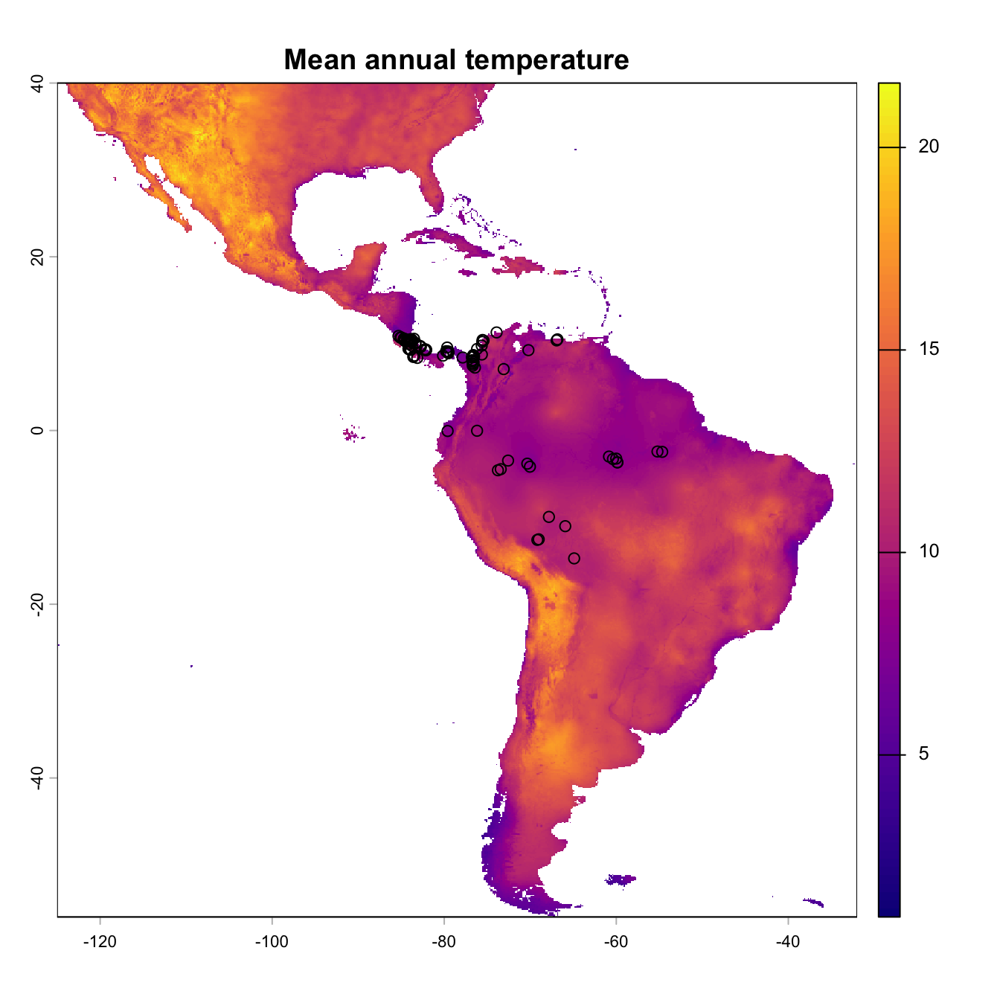
ノート補足:
points（） は「重ね描き」
元の vignette では、points(occs) を 2 回続けて呼んで「絞り込んだ点が上書きされた」ことを示しますが、 これでは絞り込み前の点が残ったままで、成功したかどうかが見分けにくくなります。 ここでは、描き直してから確認しています。 plot() は新しい図を描き、points() は、すでにある図に点を重ねる関数です。
3.4 環境の類似度（MESS）
調査範囲のうち、出現地点の環境とは気候が大きく異なる場所を、 MESS（Multivariate Environmental Similarity Surface; Elith et al. 2010）で調べてみます。 値が大きいほど出現地点の環境に似ていて、値が小さい（負に大きい）ほど違うことを表します。 出現地点の環境と大きく異なる場所への予測は不確実性が高いので、 別の時代や別の地域へ予測する（モデルの転用）ときには、とくに重要です。
# 出現地点の環境変数の値を取り出す（これが「基準」になる）
occs.z <- terra::extract(envs, occs, ID = FALSE)
# 環境変数が NA の記録（海上など）を探して除く
occs.na <- which(rowSums(is.na(occs.z)) > 0)
if (length(occs.na) > 0) {
occs <- occs[-occs.na, ]
occs.z <- na.omit(occs.z)
}
# predicts パッケージの mess() で類似度を計算する
occs.mess <- predicts::mess(envs, occs.z)
plot(occs.mess, main = "Environmental similarity")
points(occs)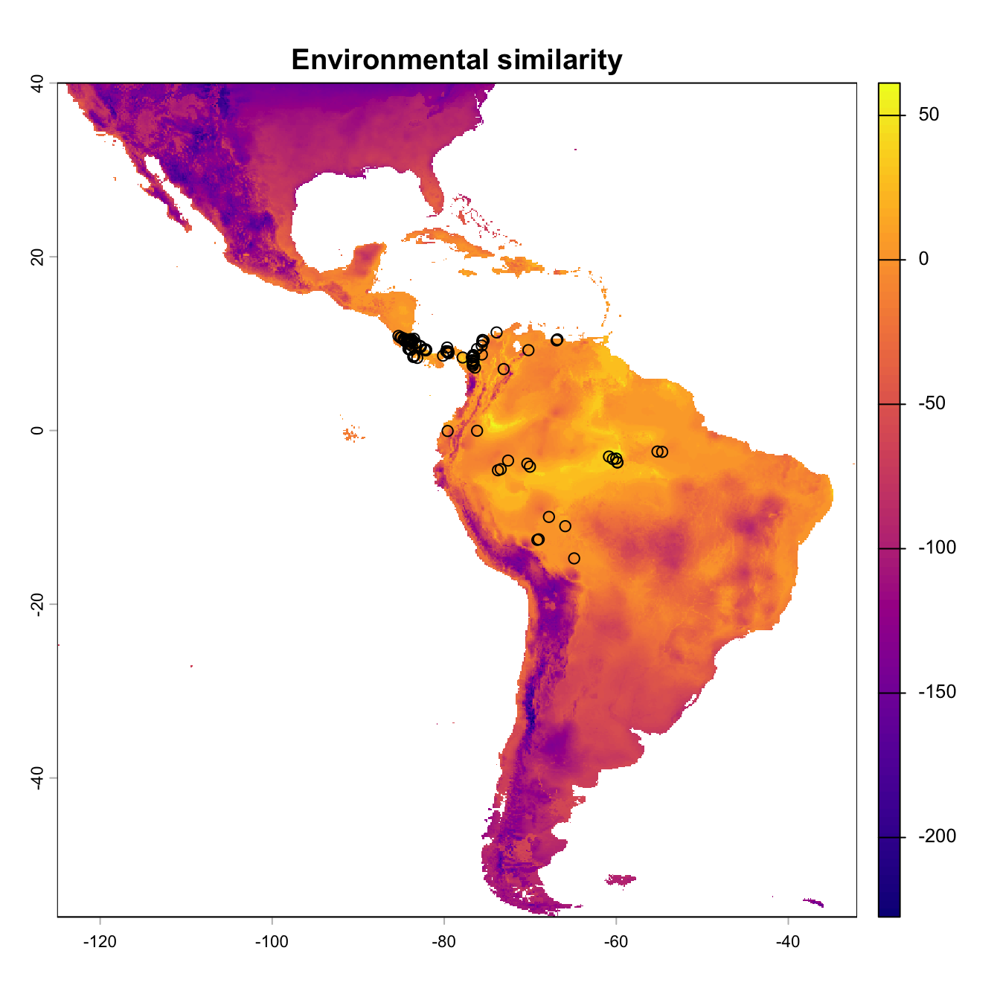
警告元のコードからの変更点
元の vignette では occs <- occs[-occs.na, ] と書かれています。 ところが、occs.na が 空（NA の記録が 1 つもない）だと、 R の x[-integer(0), ] は すべての行を除いてしまいます（0 行のデータになる）。 データを更新したときに突然壊れる原因になるので、ここでは if (length(occs.na) > 0) で守っています。
3.5 背景範囲と背景点
Maxent などの 出現のみ（presence-background）モデルは、 出現地点の環境と、背景（調査範囲の中のランダムな地点）の環境を比べて、 種が好む環境を推定します。 そのため、背景点をどこから取るか（背景範囲）を決める必要があります。
その種に適しているのに、分散の制約などで分布していない場所を含めないように、 背景範囲は、出現地点の周囲に限るのが無難です（VanDerWal et al. 2009, Merow et al. 2013）。 ここでは、すべての出現地点を 500 km のバッファー（緩衝域）で囲んだ範囲を使います。 バッファーは、sf パッケージ（地理空間ベクターデータを扱う）で作ります。
# 出現記録を sf オブジェクト（座標付きの点）に変換する。
# 座標系（CRS）は、気候ラスターと同じ WGS84（緯度経度）。
occs.sf <- sf::st_as_sf(occs, coords = c("longitude", "latitude"),
crs = terra::crs(envs))
# バッファーを作るには、単位が度ではなくメートルの座標系が適している。
# ここでは、等積図法の Eckert IV 図法に変換する。
eckertIV <- "+proj=eck4 +lon_0=0 +x_0=0 +y_0=0 +datum=WGS84 +units=m +no_defs"
occs.sf <- sf::st_transform(occs.sf, crs = eckertIV)
# 500 km のバッファーを作り、1 つにまとめて、緯度経度に戻す
# （500 km なら、カリブ海の島々は含まれない）
occs.buf <- sf::st_buffer(occs.sf, dist = 500000) |>
sf::st_union() |>
sf::st_sf() |>
sf::st_transform(crs = terra::crs(envs))
plot(envs[[1]], main = names(envs)[1])
points(occs)
# sf オブジェクトを重ね描きするには add = TRUE
plot(occs.buf, border = "blue", lwd = 3, add = TRUE)
ノート補足:
|>（パイプ）
x |> f() |> g() は g(f(x)) と同じ意味です。「x を f に渡し、その結果を g に渡す」と、左から右へ順に読めます。
続いて、環境ラスターをバッファーの範囲に切り出し（crop）、バッファーの形で切り抜きます（mask）。
# バッファーを含む四角形に切り出す
envs.bg <- terra::crop(envs, occs.buf)
# バッファーの形で切り抜く（外側は NA になる）
envs.bg <- terra::mask(envs.bg, occs.buf)
plot(envs.bg[[1]], main = names(envs)[1])
points(occs)
plot(occs.buf, border = "blue", lwd = 3, add = TRUE)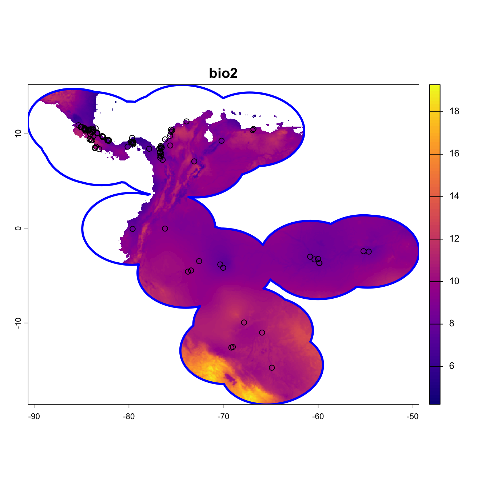
背景点として、この範囲から 10,000 点をランダムに取ります。 （背景点の数も、研究ごとに考えるべき設定のひとつです。）
# 背景範囲のラスターから 10,000 点を無作為に抽出する（1 セルにつき最大 1 点）
bg <- terra::spatSample(envs.bg, size = 10000, na.rm = TRUE,
values = FALSE, xy = TRUE) |> as.data.frame()
# 出現記録と同じ列名（longitude, latitude）にそろえる
colnames(bg) <- colnames(occs)
# 背景範囲をほぼ全域がカバーしている
plot(envs.bg[[1]])
points(bg, pch = 20, cex = 0.2)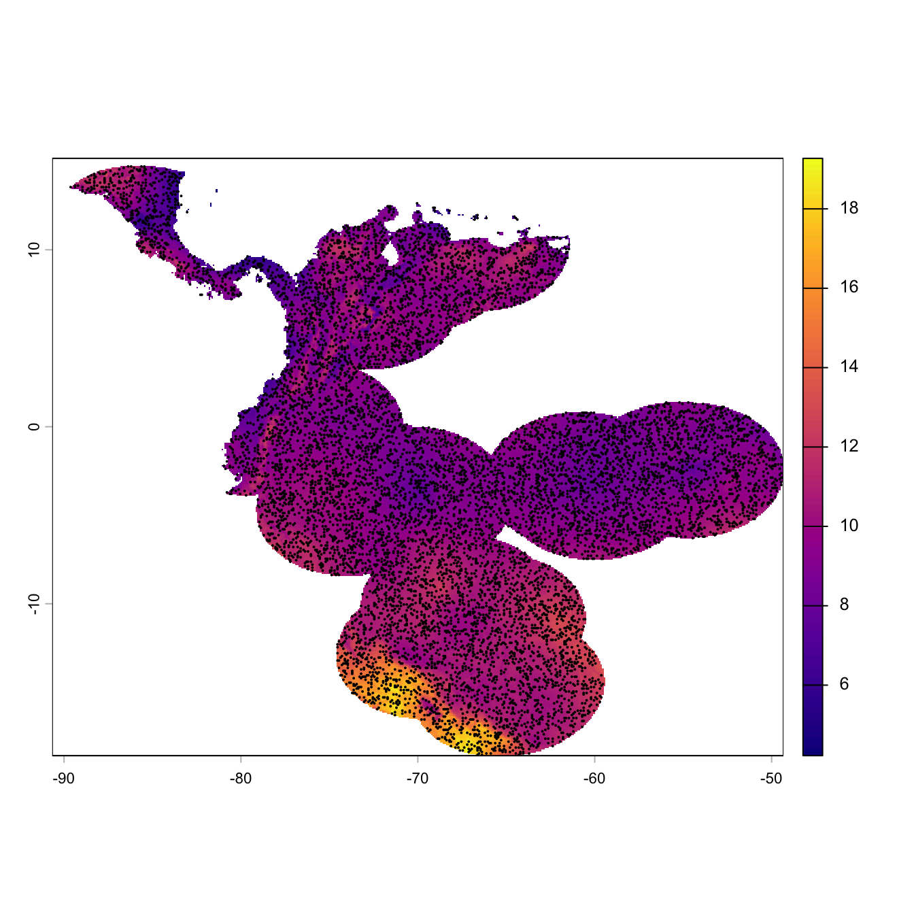
ヒント実際の研究では
ここでは背景点を一様ランダムに取りましたが、実際の出現記録には、採集の偏り（都市の近くや登山道沿いに記録が集中するなど）があることがよくあります。 その場合は、同じ分類群（グループ）全体の記録の密度（ターゲットグループ）に比例して背景点を取る方法が有効です（Phillips et al. 2009）。 アリの研究（Kass et al. 2022）も、全アリ記録の密度で重みづけして背景点を取っています。
4 評価用のデータ分割（パーティション）
ENMevaluate() は、まず出現記録を 訓練用と検証用のグループ（fold） に分け、 交差検証（k-fold cross-validation）を行います。 分け方は 7 種類あり、ENMevaluate() の partitions 引数で選びます。 分割は、ENMevaluate() の内部で自動的に行われますが、 その前に自分で分割してみて、結果を図で確認することもできます。 このチュートリアルでは、実際の研究でよく使われる次の 4 種類を取り上げます。
- 空間ブロック（block）
- 市松模様（checkerboard）
- ジャックナイフ（jackknife; leave-one-out）
- ランダム k 分割（random k-fold）
（さらに、5. ユーザー定義の分割、6. 完全に独立したテストデータ、7. 階層的な市松模様もありますが、 このチュートリアルでは短い紹介にとどめます。）
最初の 2 つ（と階層的市松模様）は、空間的に分けた分割 です。 出現記録と背景点の両方を、位置にもとづいて検証グループに分けます。 近い場所のデータが訓練用と検証用の両方に入ると、 モデルの成績が実際より高く見えてしまう（空間自己相関）ので、それを避けるのが目的です (Veloz 2009, Roberts et al. 2017)。
4.1 ブロック（block）
block は、緯度線と経度線で、出現記録を 4 つのグループに（できるだけ同数に）分けます。 まず 1 方向で記録を 2 つに分け、次に、それぞれをもう一方向で 2 つに分けます。 背景点も、同じ線で 4 つのグループに分けます。 結果は、出現記録と背景点それぞれのグループ番号をもつリストです。
block <- get.block(occs, bg, orientation = "lat_lon")
# 各グループの出現記録数がほぼ等しいことを確かめる
table(block$occs.grp)
1 2 3 4
25 24 25 24 分割した結果を、地図の上に表示してみましょう。 ENMeval の作図関数は ggplot2 で作られているので、+ で ggplot2 の関数を足して、見た目を変えられます。
evalplot.grps(pts = occs, pts.grp = block$occs.grp, envs = envs.bg) +
ggplot2::ggtitle("Spatial block partitions: occurrences")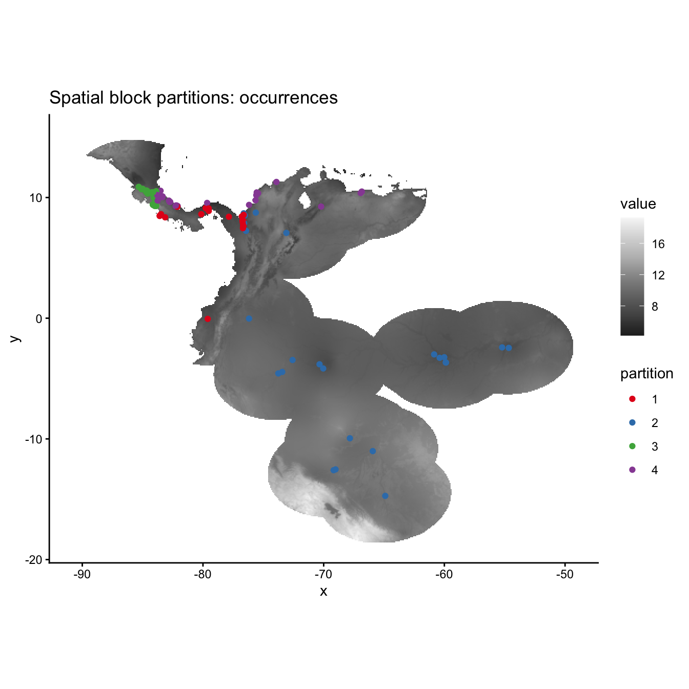
# 背景点は、点の数が均等になるように分けられる（面積が均等になるわけではない）
evalplot.grps(pts = bg, pts.grp = block$bg.grp, envs = envs.bg) +
ggplot2::ggtitle("Spatial block partitions: background")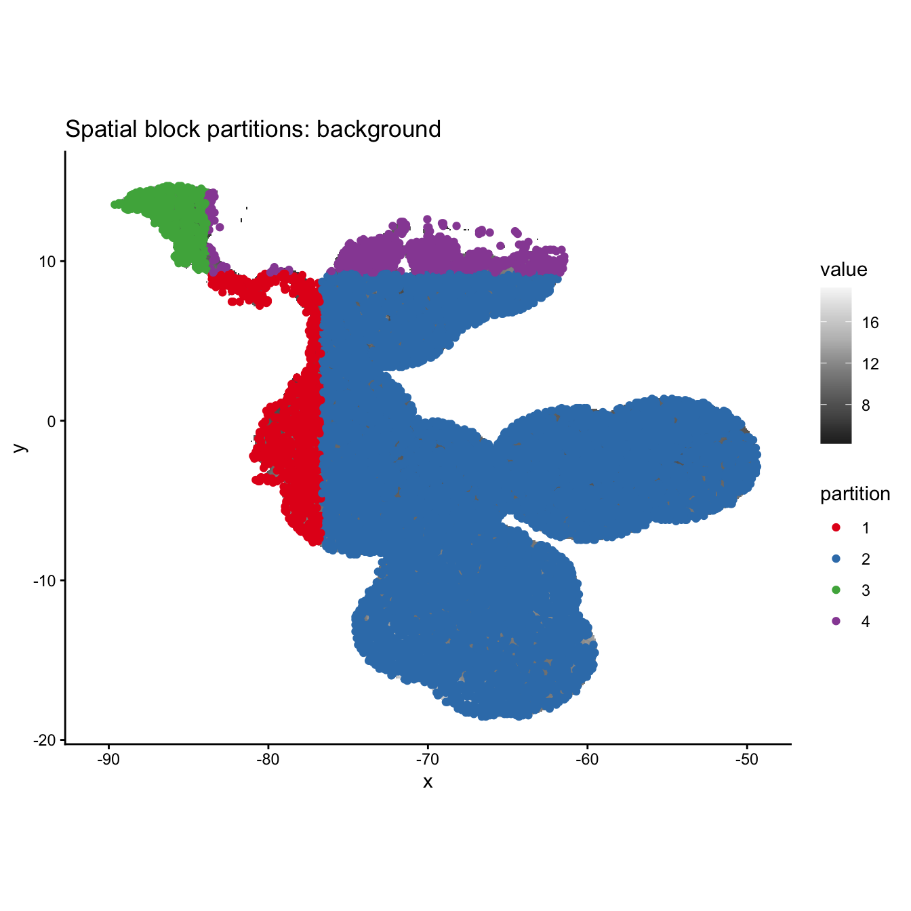
グループごとの環境が、他のグループとどのくらい違うかも調べられます。 そのために、出現記録と背景点の位置で環境変数の値を取り出しておきます。
# 出現記録と背景点の位置の環境変数の値（座標つき）
occs.z <- cbind(occs, terra::extract(envs, occs, ID = FALSE))
bg.z <- cbind(bg, terra::extract(envs, bg, ID = FALSE))
# 各グループを基準にしたときの環境の類似度（MESS）のヒストグラム
evalplot.envSim.hist(occs.z = occs.z, bg.z = bg.z, occs.grp = block$occs.grp,
bg.grp = block$bg.grp, ref.data = "occs")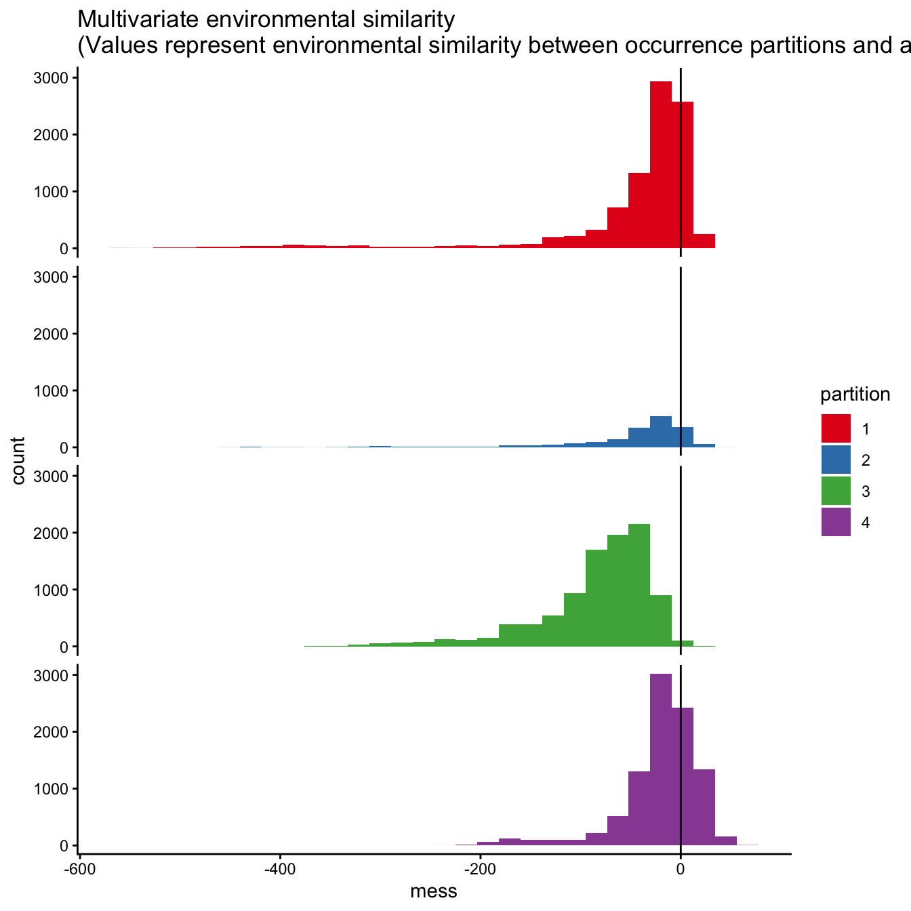
# 調査範囲全体について、各検証グループを基準にした環境類似度の地図。
# bb.buf は、地図の表示範囲を調整する（調査範囲の周りの余白）。
evalplot.envSim.map(envs = envs, occs.z = occs.z, bg.z = bg.z,
occs.grp = block$occs.grp, bg.grp = block$bg.grp,
ref.data = "occs", bb.buf = 7)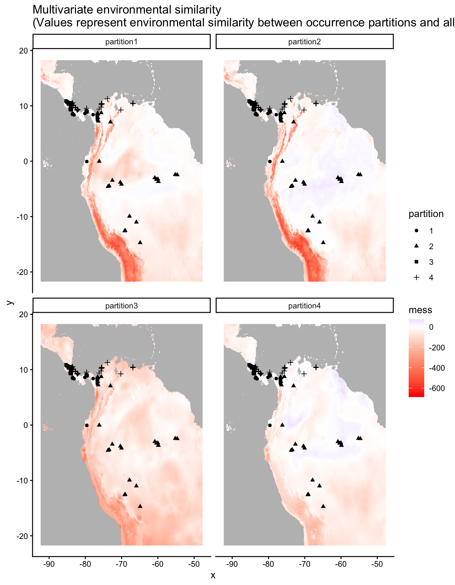
4.2 市松模様（checkerboard）
市松模様の分割では、調査範囲に市松模様のマス目を作り、各記録がどのマスに入るかでグループを決めます。 ブロックと違い、地理的な空間は均等に分けますが、グループごとの記録数は均等になるとは限りません。 マス目の元になるラスターが必要で、ここでは予測変数のラスターを使います。 aggregation.factor は、何セルをまとめて 1 マスにするかを表します。
basic checkerboard は 2 グループ (k = 2) に分けます。
cb1 <- get.checkerboard(occs, envs.bg, bg, aggregation.factor = 25)
evalplot.grps(pts = occs, pts.grp = cb1$occs.grp, envs = envs.bg)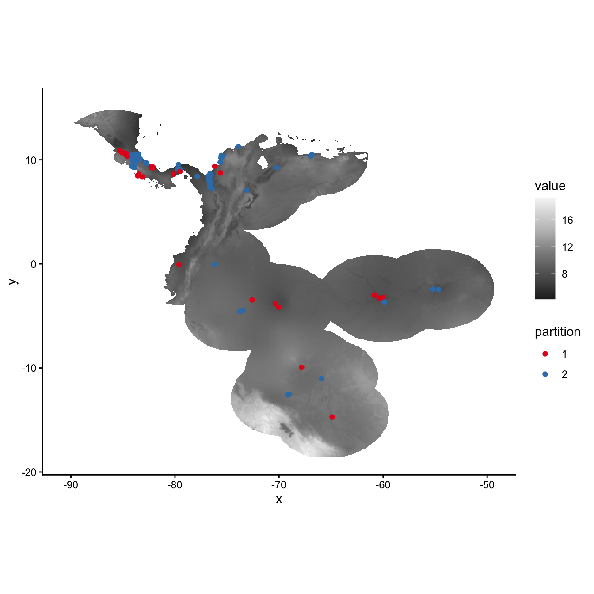
# 背景点を描くと、市松模様がはっきり見える
evalplot.grps(pts = bg, pts.grp = cb1$bg.grp, envs = envs.bg)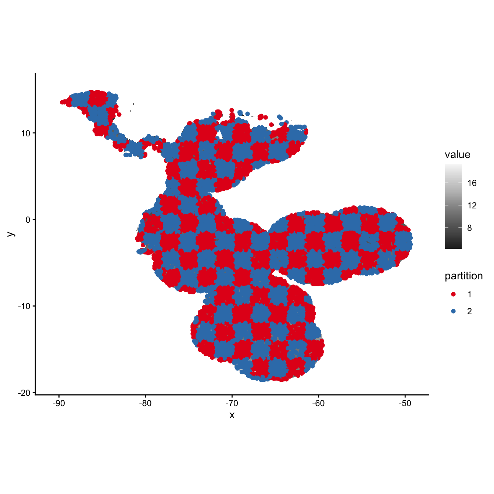
# グループ間の環境の違いは小さい
evalplot.envSim.hist(occs.z = occs.z, bg.z = bg.z, occs.grp = cb1$occs.grp,
bg.grp = cb1$bg.grp, ref.data = "occs")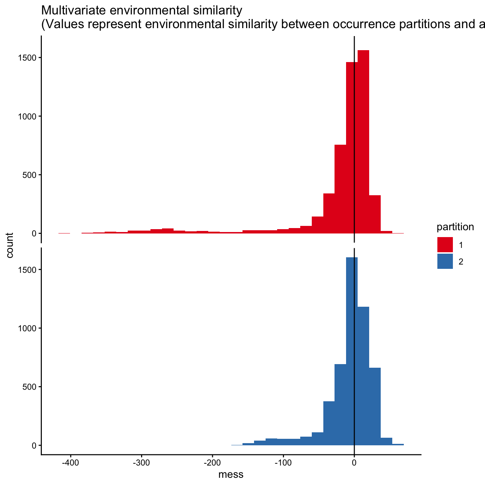
ノート補足:他の分割方法
- 階層的市松模様（hierarchical checkerboard）は、
aggregation.factor = c(10, 10)のように 2 つの値を渡すと、2 つのスケールで 4 グループに分けます。 aggregation.factorを大きくすると、マスが大きくなり、グループ間の環境の違いが大きくなる傾向があります。
4.3 ジャックナイフ（jackknife）
ここからの 2 つは、（a） 背景点を分けず（検証のたびに全背景点を使う）、（b） 空間自己相関を考慮しない、という点で、最初の 3 つと違います。
記録が少ない場合（目安は約 25 地点未満）は、グループ数 k を記録数 n と同じにする ジャックナイフ（leave-one-out） 法が使えます (Pearson et al. 2007, Shcheglovitova & Anderson 2013)。 1 つの記録を除いてモデルを作り、除いた記録で検証する、という作業を n 回繰り返します。 n 個のモデルを作るので、記録が多いと時間がかかります。
jack <- get.jackknife(occs, bg)
# 記録が 10 点より多いと、凡例は表示されない
evalplot.grps(pts = occs, pts.grp = jack$occs.grp, envs = envs.bg)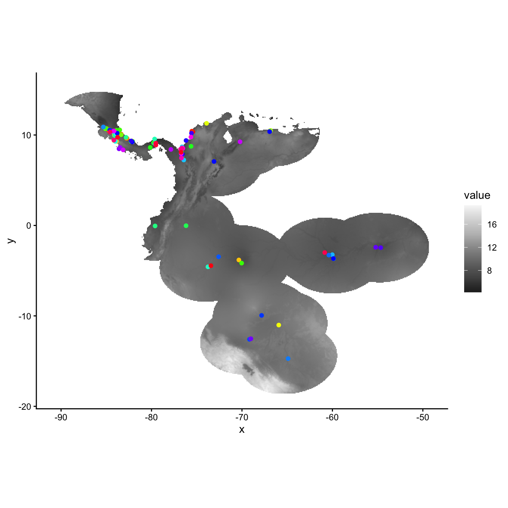
4.4 ランダム k 分割（random k-fold）
出現記録を、k 個のグループにランダムに分けます。 Maxent のソフトウェアの「cross-validate」と同じです。 記録が多いときには、たまたまグループが空間的に偏ることがあるため、 空間自己相関を避けたい場合には、空間的な分割のほうが望ましいです（Roberts et al. 2017）。 ここでは 5 つのグループに分けます。
rand <- get.randomkfold(occs, bg, k = 5)
evalplot.grps(pts = occs, pts.grp = rand$occs.grp, envs = envs.bg)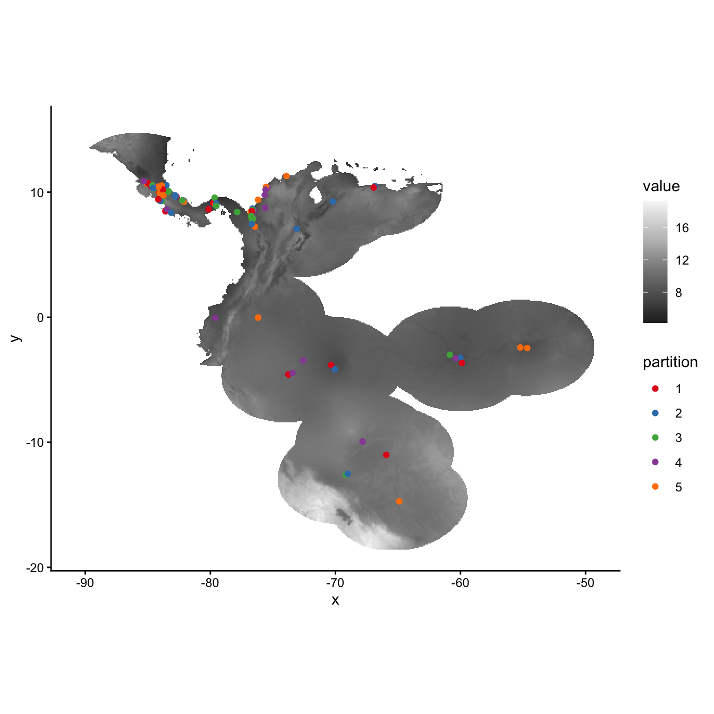
# ランダムなので、グループ間の環境に大きな違いはない
evalplot.envSim.hist(occs.z = occs.z, bg.z = bg.z, occs.grp = rand$occs.grp,
bg.grp = rand$bg.grp, ref.data = "occs")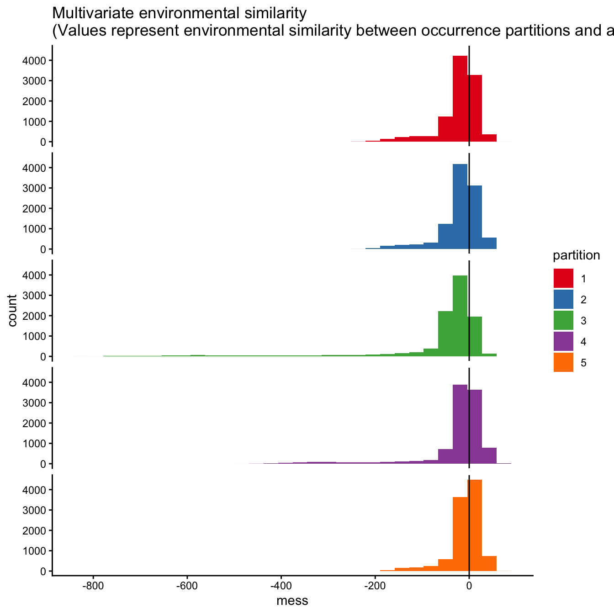
ヒント実際の研究では:分割方法の選び方
Kass et al. (2022) は、記録が 25 地点未満の種では ジャックナイフ、25 地点以上では ランダム 5 分割 を使いました。 現在の分布を地図にすることが目的で、別の環境への転用が目的ではなかったからです。 気候変動下での将来予測など、転用が目的なら、空間的な分割（block や checkerboard）が適しています。
次のコードは、記録数で分割方法を切り替える例です（ここでは実行しません）。
# 記録が 25 点未満ならジャックナイフ、それ以外はランダム 5 分割
partition.method <- if (nrow(occs) < 25) "jackknife" else "randomkfold"4.5 ユーザー定義の分割
最後の方法は、自分で分割を決めて渡す方法です。 たとえば、他のパッケージで作った分割を使えます。 ここでは blockCV パッケージ（Valavi et al. 2019）で空間的な分割を作って ENMeval で使う例を紹介します。
ENMevaluate() に渡すときには、出現記録 AND 背景点の両方 のグループ番号が必要です。
# 出現記録と背景点をまとめて、sf オブジェクト（座標系は WGS84）にする
occsBg.sf <- sf::st_as_sf(rbind(occs, bg), coords = c("longitude", "latitude"),
crs = "+proj=longlat +ellps=WGS84 +datum=WGS84 +no_defs")
terra::crs(envs.bg) <- terra::crs(occsBg.sf)
# blockCV の cv_spatial() で、1000 km 四方のブロックを作り、
# 5 つのグループにランダムに割り当てる
sb <- blockCV::cv_spatial(x = occsBg.sf, r = envs.bg, k = 5,
size = 1000000, selection = "random",
progress = FALSE, report = FALSE)
# 結果から、出現記録用と背景点用のグループ番号を取り出す
occs.grp <- sb$folds_ids[1:nrow(occs)]
bg.grp <- sb$folds_ids[(nrow(occs) + 1):length(sb$folds_ids)]
evalplot.grps(pts = bg, pts.grp = bg.grp, envs = envs.bg)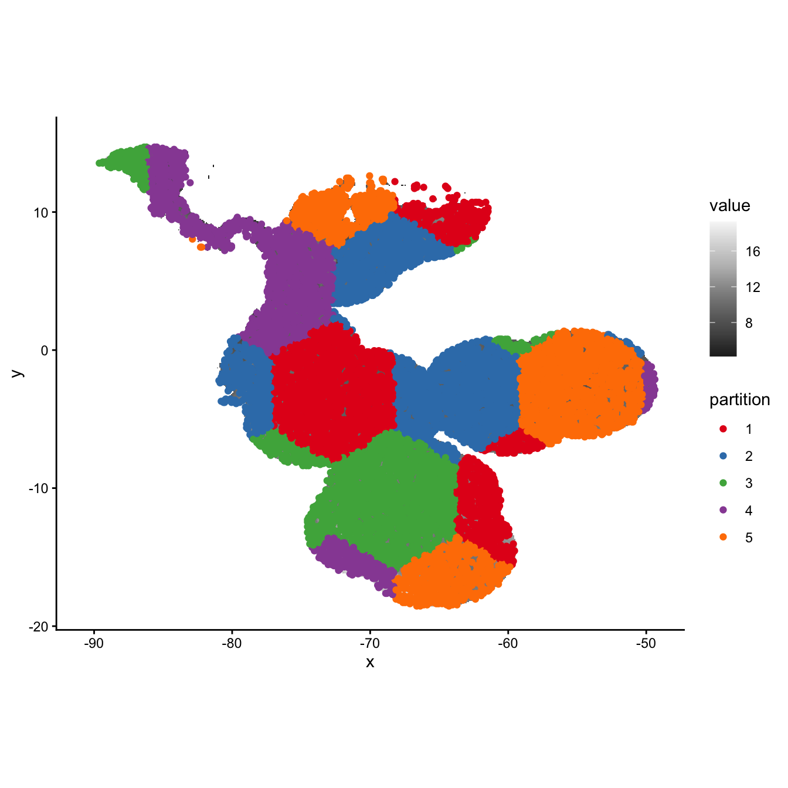
ノート補足:ここでは使わないユーザー定義の例
元の vignette には、k-means 法で出現記録を空間的にクラスタリングして分割する例もあります。 全背景点を使うには背景点のグループ番号をすべて 0 にします（bg.grp <- rep(0, nrow(bg))）。
どの分割方法を選ぶかは、研究の目的と対象によって決めます。 詳しくは、参考文献にある論文を見てください。
5 ENMeval でモデルを作る
分割方法が決まったら、いよいよモデルを作ります。 ENMeval の主要関数 ENMevaluate() の出番です。
5.1 基本的な考え方
ENMeval は様々なアルゴリズムを扱えますが、ここでは Maxent（Phillips et al. 2006, 2008, 2017）を、 R だけで動く maxnet パッケージで実行します。 Java は不要です。
Maxent のチューニングで調整する主な設定は 2 つです（Elith et al. 2011, Merow et al. 2013）。
- 正則化の倍率（regularization multiplier; RM）:モデルに変数やその変換を入れることへのペナルティの強さです。大きいほど、単純で平らな（flatter）予測になります。
- 特徴クラス（feature class; FC）:応答曲線の形を決めます。
L= 線形（linear）、Q= 二次（quadratic）、H= ヒンジ（hinge）、P= 積（product）、T= しきい値（threshold）。線形のみを許可すると、すべてを許可するより単純なモデルになりやすいです。
ENMevaluate() は、RM と FC の すべての組み合わせ について、別々にモデルを作って評価します。 次の呼び出しは、RM = 1 と 2、特徴クラスは線形のみの、計 2 個のモデルを作ります。
警告注意:
algorithm = 'maxnet' をかならず指定する
algorithm を指定しない場合の既定値は、バージョンによって違います。 どのアルゴリズムを使ったのかをはっきりさせるため、いつも明示的に指定します。
e.mx.l <- ENMevaluate(occs = occs, envs = envs, bg = bg,
algorithm = "maxnet", partitions = "block",
tune.args = list(fc = "L", rm = 1:2))e.mx.lAn object of class: ENMevaluation
occurrence/background points: 98 / 10000
partition method: block
partition settings: orientation = lat_lon
clamp: left: bio2, bio3, bio5, bio8, bio9, bio13, bio14, bio15, bio18, bio19
right: bio2, bio3, bio5, bio8, bio9, bio13, bio14, bio15, bio18, bio19
categoricals:
algorithm: maxnet
tune settings: fc: L
rm: 1,2
overlap: TRUE
Refer to ?ENMevaluation for information on slots.もっと広い範囲の設定を比べてみましょう。 特徴クラスを 3 通り（L、LQ、LQH）、RM を 1〜5 の 5 通りにすると、3 × 5 = 15 個のモデルができます。
tune.args <- list(fc = c("L", "LQ", "LQH"), rm = 1:5)
e.mx <- ENMevaluate(occs = occs, envs = envs, bg = bg,
algorithm = "maxnet", partitions = "block",
tune.args = tune.args)e.mxAn object of class: ENMevaluation
occurrence/background points: 98 / 10000
partition method: block
partition settings: orientation = lat_lon
clamp: left: bio2, bio3, bio5, bio8, bio9, bio13, bio14, bio15, bio18, bio19
right: bio2, bio3, bio5, bio8, bio9, bio13, bio14, bio15, bio18, bio19
categoricals:
algorithm: maxnet
tune settings: fc: L,LQ,LQH
rm: 1,2,3,4,5
overlap: TRUE
Refer to ?ENMevaluation for information on slots.
ノート補足:実行時間と並列計算
作るモデルの数が多い、データが大きい、パソコンの性能が低い、という場合は、実行に時間がかかります。 parallel = TRUE（と numCores = 使うコア数）を指定すると、並列計算で速くなることがあります。 ただし、データが小さいと、並列計算のほうが遅くなることもあります。
ヒント実際の研究では:設定の範囲
アリの研究（Kass et al. 2022）は、特徴クラス L・LQ・H・LQH、RM = 1〜5 の組み合わせ（計 20 個）をチューニングしました。
ニッチの重なりの指標（Schoener’s D など）も計算できます。
overlap <- calc.niche.overlap(e.mx@predictions, overlapStat = "D")
|
| | 0%
|
|===== | 7%
|
|========== | 14%
|
|=============== | 21%
|
|==================== | 29%
|
|========================= | 36%
|
|============================== | 43%
|
|=================================== | 50%
|
|======================================== | 57%
|
|============================================= | 64%
|
|================================================== | 71%
|
|======================================================= | 79%
|
|============================================================ | 86%
|
|================================================================= | 93%
|
|======================================================================| 100%# 最初の 5 モデルどうしの重なり
overlap[1:5, 1:5] fc.L_rm.1 fc.LQ_rm.1 fc.LQH_rm.1 fc.L_rm.2 fc.LQ_rm.2
fc.L_rm.1 NA NA NA NA NA
fc.LQ_rm.1 0.8358920 NA NA NA NA
fc.LQH_rm.1 0.6293263 0.6738929 NA NA NA
fc.L_rm.2 0.9241235 0.7864180 0.6171537 NA NA
fc.LQ_rm.2 0.8774640 0.9361599 0.6704174 0.8402227 NA5.2 結果を調べる
ENMevaluate() が返すのは ENMevaluation オブジェクトで、次のような スロット（中に入っている要素）をもちます。
algorithm:使ったアルゴリズムtune.settings:チューニングした設定partition.method:使った分割方法results:評価指標の要約表results.partitions:fold ごとの評価指標models:モデルのリストpredictions:モデルの予測（SpatRaster）occs,bg:使った出現記録と背景点（環境の値つき）occs.grp,bg.grp:分割のグループ番号- ほか（
variable.importance,overlap,rmmなど）
まず、全体の構造を見ます。
e.mxAn object of class: ENMevaluation
occurrence/background points: 98 / 10000
partition method: block
partition settings: orientation = lat_lon
clamp: left: bio2, bio3, bio5, bio8, bio9, bio13, bio14, bio15, bio18, bio19
right: bio2, bio3, bio5, bio8, bio9, bio13, bio14, bio15, bio18, bio19
categoricals:
algorithm: maxnet
tune settings: fc: L,LQ,LQH
rm: 1,2,3,4,5
overlap: TRUE
Refer to ?ENMevaluation for information on slots.# 上位の要素だけに絞って構造を見る
str(e.mx, max.level = 2)Formal class 'ENMevaluation' [package "ENMeval"] with 20 slots
..@ algorithm : chr "maxnet"
..@ tune.settings :'data.frame': 15 obs. of 3 variables:
.. ..- attr(*, "out.attrs")=List of 2
..@ partition.method : chr "block"
..@ partition.settings :List of 1
..@ other.settings :List of 7
..@ doClamp : logi TRUE
..@ clamp.directions :List of 2
..@ results :'data.frame': 15 obs. of 19 variables:
.. ..- attr(*, "out.attrs")=List of 2
..@ results.partitions :'data.frame': 60 obs. of 7 variables:
..@ models :List of 15
..@ variable.importance:List of 15
..@ predictions :S4 class 'SpatRaster' [package "terra"]
..@ taxon.name : chr ""
..@ occs :'data.frame': 98 obs. of 12 variables:
..@ occs.testing :'data.frame': 0 obs. of 0 variables
..@ occs.grp : Factor w/ 4 levels "1","2","3","4": 4 3 3 3 4 3 3 4 3 4 ...
..@ bg :'data.frame': 10000 obs. of 12 variables:
..@ bg.grp : Factor w/ 4 levels "1","2","3","4": 2 2 2 2 1 2 2 2 1 2 ...
..@ overlap : list()
..@ rmm :List of 8
.. ..- attr(*, "class")= chr [1:2] "list" "RMM"スロットは eval.*（） という関数で取り出せます。
# 使ったアルゴリズム、チューニング設定、分割方法
eval.algorithm(e.mx)[1] "maxnet"eval.tune.settings(e.mx) |> head() fc rm tune.args
1 L 1 fc.L_rm.1
2 LQ 1 fc.LQ_rm.1
3 LQH 1 fc.LQH_rm.1
4 L 2 fc.L_rm.2
5 LQ 2 fc.LQ_rm.2
6 LQH 2 fc.LQH_rm.2eval.partition.method(e.mx)[1] "block"# 検証データでの評価指標の要約表
eval.results(e.mx) |> head() fc rm tune.args auc.train cbi.train auc.diff.avg auc.diff.sd auc.val.avg
1 L 1 fc.L_rm.1 0.8294347 0.962 0.1461552 0.05983995 0.7587874
2 LQ 1 fc.LQ_rm.1 0.8479816 0.938 0.1368450 0.03566073 0.7622931
3 LQH 1 fc.LQH_rm.1 0.9099398 0.954 0.1171720 0.06349485 0.7977390
4 L 2 fc.L_rm.2 0.8258755 0.950 0.1507261 0.05915195 0.7570469
5 LQ 2 fc.LQ_rm.2 0.8450704 0.922 0.1397222 0.03348164 0.7692146
6 LQH 2 fc.LQH_rm.2 0.8859551 0.927 0.1262490 0.04246058 0.7774353
auc.val.sd cbi.val.avg cbi.val.sd or.10p.avg or.10p.sd or.mtp.avg or.mtp.sd
1 0.1472318 0.74325 0.2026201 0.07208333 0.05223478 0.02000000 0.04000000
2 0.1350770 0.63550 0.2876207 0.10333333 0.15790292 0.02000000 0.04000000
3 0.1336586 0.71325 0.2496349 0.20583333 0.19478621 0.04083333 0.04716991
4 0.1522118 0.72425 0.2098053 0.07208333 0.05223478 0.02000000 0.04000000
5 0.1345887 0.63200 0.2762402 0.08250000 0.06806179 0.02000000 0.04000000
6 0.1330956 0.61175 0.1717816 0.19625000 0.17181156 0.03041667 0.03845091
AICc delta.AICc w.AIC ncoef
1 2151.771 125.42940 5.797957e-28 9
2 2123.712 97.37016 7.182279e-22 14
3 2026.342 0.00000 9.998254e-01 35
4 2156.952 130.61042 4.347427e-29 9
5 2132.261 105.91896 9.998022e-24 14
6 2043.648 17.30603 1.745691e-04 24# fold ごとの評価指標
eval.results.partitions(e.mx) |> head() tune.args fold auc.val auc.diff cbi.val or.mtp or.10p
1 fc.L_rm.1 1 0.9600702 0.18342788 0.969 0.00 0.00000000
2 fc.L_rm.1 2 0.6569245 0.13185164 0.651 0.00 0.12500000
3 fc.L_rm.1 3 0.6412591 0.20132196 0.511 0.08 0.08000000
4 fc.L_rm.1 4 0.7768958 0.06801916 0.842 0.00 0.08333333
5 fc.LQ_rm.1 1 0.9592361 0.15959246 0.923 0.00 0.00000000
6 fc.LQ_rm.1 2 0.6653990 0.08745172 0.264 0.00 0.00000000# モデルのリスト（名前は tune.args の列と同じ）
eval.models(e.mx) |> str(max.level = 1)List of 15
$ fc.L_rm.1 :List of 23
..- attr(*, "class")= chr [1:3] "maxnet" "lognet" "glmnet"
$ fc.LQ_rm.1 :List of 23
..- attr(*, "class")= chr [1:3] "maxnet" "lognet" "glmnet"
$ fc.LQH_rm.1:List of 23
..- attr(*, "class")= chr [1:3] "maxnet" "lognet" "glmnet"
$ fc.L_rm.2 :List of 23
..- attr(*, "class")= chr [1:3] "maxnet" "lognet" "glmnet"
$ fc.LQ_rm.2 :List of 23
..- attr(*, "class")= chr [1:3] "maxnet" "lognet" "glmnet"
$ fc.LQH_rm.2:List of 23
..- attr(*, "class")= chr [1:3] "maxnet" "lognet" "glmnet"
$ fc.L_rm.3 :List of 23
..- attr(*, "class")= chr [1:3] "maxnet" "lognet" "glmnet"
$ fc.LQ_rm.3 :List of 23
..- attr(*, "class")= chr [1:3] "maxnet" "lognet" "glmnet"
$ fc.LQH_rm.3:List of 23
..- attr(*, "class")= chr [1:3] "maxnet" "lognet" "glmnet"
$ fc.L_rm.4 :List of 23
..- attr(*, "class")= chr [1:3] "maxnet" "lognet" "glmnet"
$ fc.LQ_rm.4 :List of 23
..- attr(*, "class")= chr [1:3] "maxnet" "lognet" "glmnet"
$ fc.LQH_rm.4:List of 23
..- attr(*, "class")= chr [1:3] "maxnet" "lognet" "glmnet"
$ fc.L_rm.5 :List of 23
..- attr(*, "class")= chr [1:3] "maxnet" "lognet" "glmnet"
$ fc.LQ_rm.5 :List of 23
..- attr(*, "class")= chr [1:3] "maxnet" "lognet" "glmnet"
$ fc.LQH_rm.5:List of 23
..- attr(*, "class")= chr [1:3] "maxnet" "lognet" "glmnet"# maxnet モデルの betas は、各変数の係数（Rの式の形で書かれている）
m1.mx <- eval.models(e.mx)[["fc.LQH_rm.1"]]
m1.mx$betas bio2
-2.854103e-01
bio3
-2.313998e-01
bio8
1.730133e-01
bio13
1.154111e-02
bio14
-4.262986e-03
bio18
2.438351e-03
bio19
4.005456e-03
I(bio9^2)
-1.135484e-03
I(bio15^2)
-3.120819e-05
I(bio18^2)
-4.739440e-07
I(bio19^2)
-1.297774e-06
hinge(bio2):5.15000009536743:6.8539082955341
2.344843e-01
hinge(bio2):5.15000009536743:8.84180119572854
-1.540577e-01
hinge(bio3):87.8816324350785:94.7731399536133
5.067789e+00
hinge(bio3):61.004753112793:76.8552204054229
8.608693e+00
hinge(bio5):28.4164270673479:36.4829978942871
-1.209000e+00
hinge(bio5):30.1449779588349:36.4829978942871
-2.456334e+00
hinge(bio5):31.8735288503219:36.4829978942871
-2.100161e+00
hinge(bio5):8.25:27.2640598063566
3.540729e-02
hinge(bio8):25.4444066796984:29.4280300140381
2.112312e+00
hinge(bio8):26.0134957274612:29.4280300140381
3.871455e+00
hinge(bio8):27.7207628707496:29.4280300140381
-2.327083e+00
hinge(bio9):27.5248498770655:29.5066661834717
-1.133497e+00
hinge(bio13):446.571428571429:808
-4.871652e+00
hinge(bio13):38:210.857142857143
2.809912e+00
hinge(bio13):38:305.142857142857
-5.763561e+00
hinge(bio14):0:9.73469387755102
1.782139e+00
hinge(bio14):0:38.9387755102041
-5.014040e-01
hinge(bio15):6.85179758071899:22.296948763789
9.697802e-01
hinge(bio15):6.85179758071899:31.5640394736309
2.361776e+00
hinge(bio15):6.85179758071899:50.0982208933149
-5.699956e-01
hinge(bio18):723:1709
-4.752456e+00
hinge(bio18):43:383
1.794569e+00
hinge(bio19):872.061224489796:2249
-1.641079e+00
hinge(bio19):0:183.591836734694
-1.309475e+00 # tibble の enframe() で、読みやすい表にする
tibble::enframe(m1.mx$betas)# A tibble: 35 × 2
name value
<chr> <dbl>
1 bio2 -0.285
2 bio3 -0.231
3 bio8 0.173
4 bio13 0.0115
5 bio14 -0.00426
6 bio18 0.00244
7 bio19 0.00401
8 I(bio9^2) -0.00114
9 I(bio15^2) -0.0000312
10 I(bio18^2) -0.000000474
# ℹ 25 more rows# モデルの予測（SpatRaster）
eval.predictions(e.mx)class : SpatRaster
size : 1152, 1110, 15 (nrow, ncol, nlyr)
resolution : 0.08333333, 0.08333333 (x, y)
extent : -124.8333, -32.33333, -56, 40 (xmin, xmax, ymin, ymax)
coord. ref. :
source(s) : memory
names : fc.L_rm.1, fc.LQ_rm.1, fc.LQH_rm.1, fc.L_rm.2, fc.LQ_rm.2, fc.LQH_rm.2, ...
min values : 0, 0, 0, 0.000001, 0, 0, ...
max values : 1, 1, 1, 1, 1, 1, ...# 元の出現記録（環境変数の値つき）
eval.occs(e.mx) |> head() longitude latitude bio2 bio3 bio5 bio8 bio9 bio13 bio14
1 -75.42992 10.35429 9.461833 82.83867 33.18700 27.51933 27.42267 200 14
2 -84.60232 10.33137 8.851250 77.88850 27.51500 21.26783 21.97850 390 81
3 -84.20819 10.33197 8.834500 79.20476 27.79100 22.09600 22.39100 401 113
4 -84.00579 10.43126 8.396084 76.39748 31.70900 26.07017 26.59183 471 116
5 -75.54743 10.42296 8.497727 85.01590 32.33636 27.73485 27.23485 214 6
6 -84.65051 10.46990 9.172584 77.59566 31.44800 25.05200 25.75983 436 86
bio15 bio18 bio19
1 65.91958 306 80
2 37.55310 481 868
3 36.72206 530 926
4 38.25399 564 1041
5 70.91077 357 60
6 44.78418 427 852# 背景点（環境変数の値つき）
eval.bg(e.mx) |> head() longitude latitude bio2 bio3 bio5 bio8 bio9 bio13
99 -52.87500 -4.041667 9.844833 79.56063 31.524 24.73733 25.34400 315
100 -62.95833 -7.791667 10.473666 72.39695 33.071 25.67100 25.59383 332
101 -70.62500 -10.958333 11.053917 74.46724 31.250 25.09467 23.30750 266
102 -65.29167 -17.708333 16.625584 69.11200 27.337 18.20600 13.84733 150
103 -81.87500 8.125000 8.349999 74.55357 32.700 26.26667 27.01667 342
104 -50.12500 -2.208333 9.474667 85.99261 32.005 25.68083 26.48333 423
bio14 bio15 bio18 bio19
99 35 69.77174 179 820
100 21 60.02391 312 210
101 38 54.90619 663 142
102 5 94.88230 235 18
103 29 57.77938 463 644
104 55 66.13693 206 1117# 分割のグループ番号
eval.occs.grp(e.mx) |> str() Factor w/ 4 levels "1","2","3","4": 4 3 3 3 4 3 3 4 3 4 ...eval.bg.grp(e.mx) |> str() Factor w/ 4 levels "1","2","3","4": 2 2 2 2 1 2 2 2 1 2 ...
ノート補足:
results の表の見方
eval.results() の表の主な列は次のとおりです。
| 列 | 意味 |
|---|---|
tune.args |
設定の名前（例:fc.LQH_rm.1） |
auc.val.avg |
検証データでの AUC の平均 |
or.10p.avg |
10 パーセンタイル欠損率（omission rate）の平均（小さいほどよい） |
cbi.val.avg |
検証データでの Continuous Boyce Index の平均（大きいほどよい） |
AICc, delta.AICc |
AICc と、最小の AICc との差 |
ncoef |
0 でない係数の数（モデルの複雑さ） |
検証の指標に NA があるモデルは、交差検証のなかで、モデルがうまく作れなかったことを意味します。
6 結果の可視化
evalplot.stats() で、チューニングした設定ごとの評価指標を ggplot2 の図にできます。 横軸が RM、点と線の色が特徴クラスです。 交差検証で NA になった設定は、図に出てきません。
evalplot.stats(e = e.mx, stats = "or.10p", color = "fc", x.var = "rm")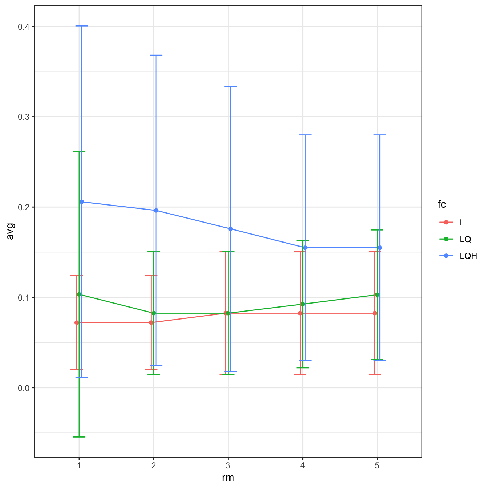
# 複数の指標を、並べて表示できる
evalplot.stats(e = e.mx, stats = c("or.10p", "cbi.val"), color = "fc", x.var = "rm")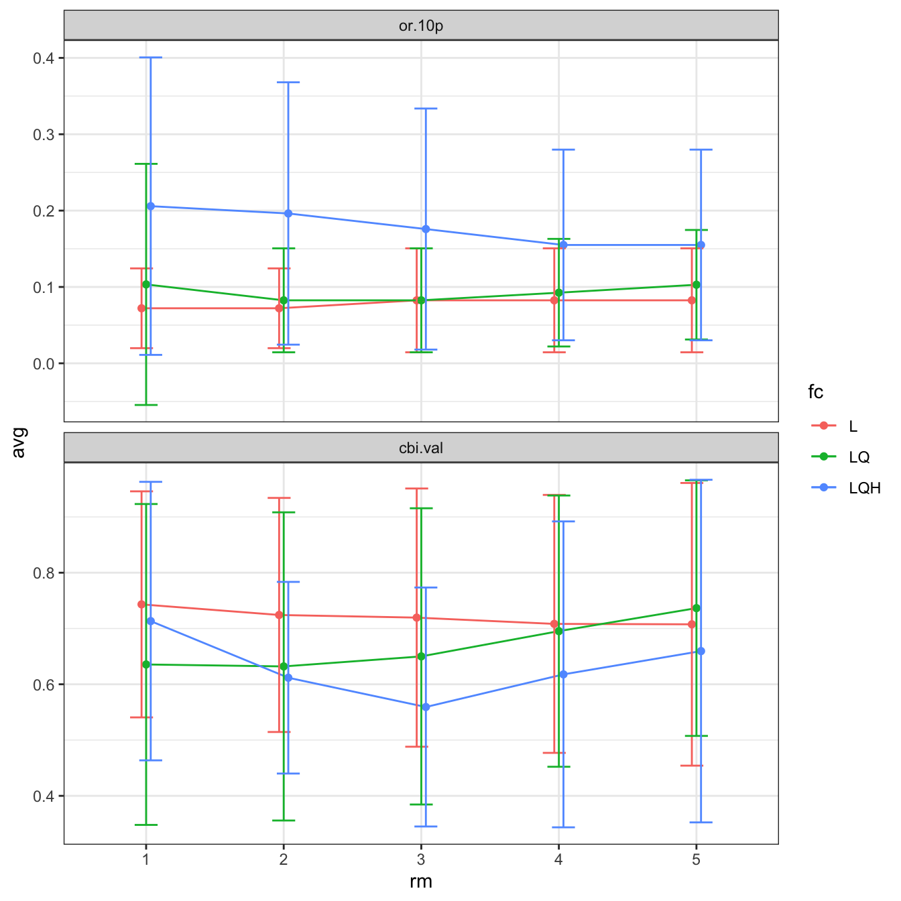
# エラーバーが見にくければ、消す
evalplot.stats(e = e.mx, stats = c("or.10p", "cbi.val"), color = "fc", x.var = "rm",
error.bars = FALSE)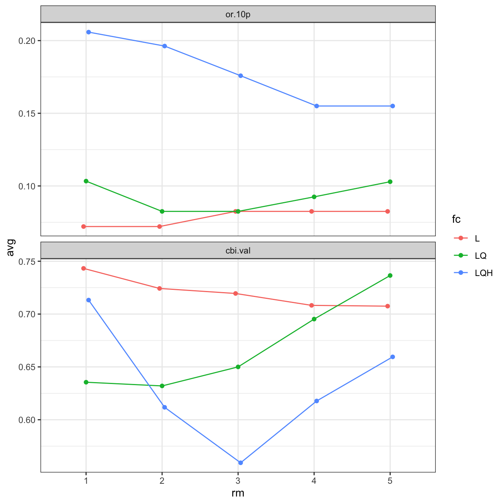
7 モデル選択
得られた結果から、最適なモデルを選びます。 このチュートリアルでは 2 つの方法を示します。
- AICc で選ぶ（交差検証の結果を使わない方法; Warren & Seifert 2011）。
- 逐次的な基準 で選ぶ（交差検証の結果を使う方法）:10 パーセンタイル欠損率（
or.10p.avg）が最小のモデルを選び、同点なら検証 CBI（Continuous Boyce Index; Hirzel et al. 2006）が最大のモデルを選ぶ。
AUC は、出現のみのモデルでは絶対的な性能指標としては不適切ですが（Lobo et al. 2008）、 同じデータで作った複数のモデルを 相対的に 比べる分には使えます（Radosavljevic & Anderson 2014）。
# 評価結果の全体
res <- eval.results(e.mx)
# AICc が最小（delta.AICc が 0）のモデル。
# 実際には delta.AICc が 2 未満のモデルは、同等と考えることが多い。
opt.aicc <- res |> filter(delta.AICc == 0)
opt.aicc fc rm tune.args auc.train cbi.train auc.diff.avg auc.diff.sd auc.val.avg
1 LQH 1 fc.LQH_rm.1 0.9099398 0.954 0.117172 0.06349485 0.797739
auc.val.sd cbi.val.avg cbi.val.sd or.10p.avg or.10p.sd or.mtp.avg or.mtp.sd
1 0.1336586 0.71325 0.2496349 0.2058333 0.1947862 0.04083333 0.04716991
AICc delta.AICc w.AIC ncoef
1 2026.342 0 0.9998254 35# 逐次的な基準:
# まず欠損率が NA のモデルを除き、欠損率が最小のモデルを残し、
# それでも複数残れば検証 CBI が最大のモデルを選ぶ。
opt.seq <- res |>
filter(!is.na(or.10p.avg)) |>
filter(or.10p.avg == min(or.10p.avg)) |>
filter(cbi.val.avg == max(cbi.val.avg))
opt.seq fc rm tune.args auc.train cbi.train auc.diff.avg auc.diff.sd auc.val.avg
1 L 1 fc.L_rm.1 0.8294347 0.962 0.1461552 0.05983995 0.7587874
auc.val.sd cbi.val.avg cbi.val.sd or.10p.avg or.10p.sd or.mtp.avg or.mtp.sd
1 0.1472318 0.74325 0.2026201 0.07208333 0.05223478 0.02 0.04
AICc delta.AICc w.AIC ncoef
1 2151.771 125.4294 5.797957e-28 9
ヒント実際の研究では:アリの研究の選択基準
Kass et al. (2022) は、次の順に絞りこみました。
- 0 でない係数がないモデルを除く。
- 訓練データでの CBI が欠損または 0 以下のモデルを除く。
- 10 パーセンタイル欠損率（
or.10p.avg）が最小のモデルを選ぶ。 - 同点なら、検証 AUC（
auc.val.avg）が最大のモデル。 - それでも同点なら、0 でない係数の数（
ncoef）が最小のモデル。
上の opt.seq の方法は、これに近い方法です。
逐次的な基準で選んだ最適モデルを調べましょう。
# tune.args で名前を指定して、ENMevaluation オブジェクトから 1 つのモデルを取り出す
mod.seq <- eval.models(e.mx)[[opt.seq$tune.args]]
# 0 でない係数
mod.seq$betas bio2 bio3 bio5 bio8 bio13 bio14
-0.449147775 0.010847738 -0.419597494 0.477241844 0.003638251 -0.024004252
bio15 bio18 bio19
-0.044464927 0.001554523 0.001507882 7.1 応答曲線
次に、周辺応答曲線（marginal response curve）を描きます。 他の変数を平均値に固定したまま、ひとつの変数だけを動かしたときの予測値の変化を示す曲線です。 縦軸は cloglog 変換（0〜1 の範囲で、出現確率の近似とみなせる値。Phillips et al. 2017）です。
evalplot.respCurves() は、他の変数を、渡した data の平均値に固定します。 ここでは、maxnet の plot() と同じになるように、出現記録だけのデータを渡します。
# 出現記録の位置の環境変数の値（変数名の列だけ）
resp.data <- eval.occs(e.mx)[, names(envs)]
# すべての変数の応答曲線
evalplot.respCurves(mod.seq, resp.data)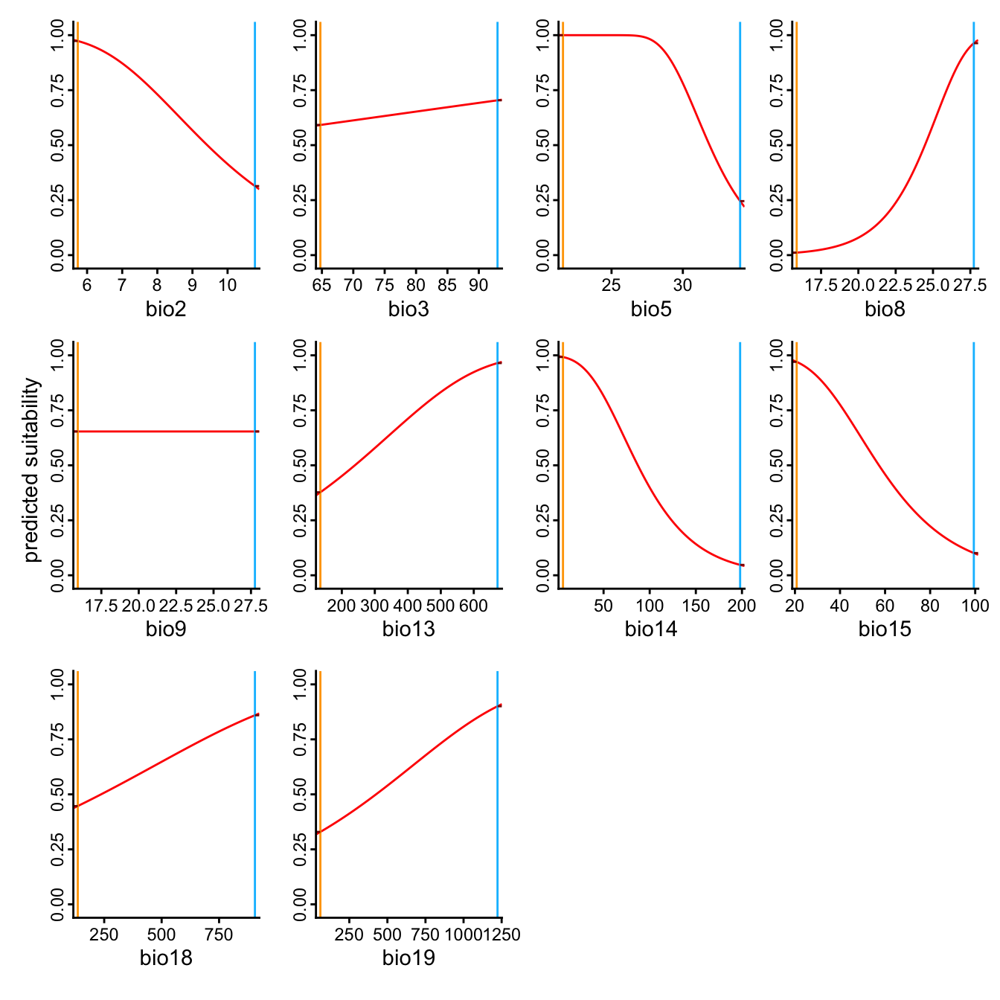
# 1 つの変数（bio5）だけの応答曲線
evalplot.respCurve(mod.seq, resp.data, var = "bio5")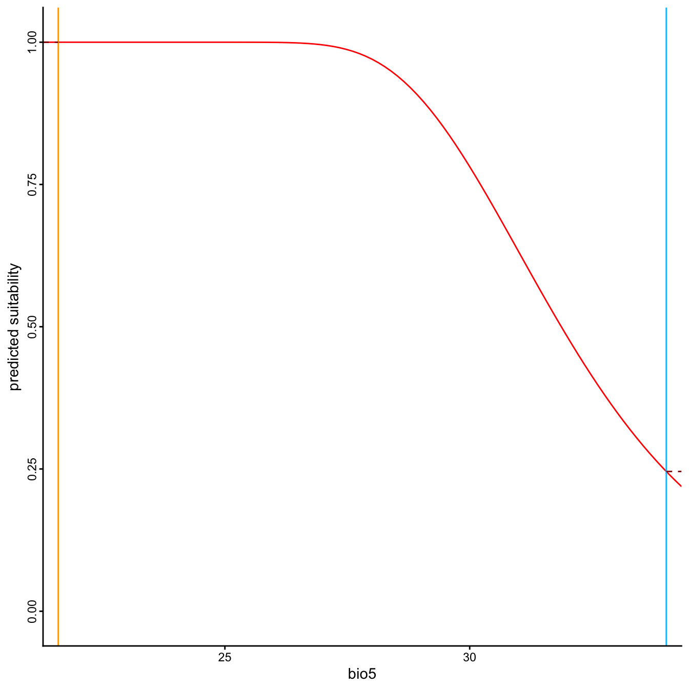
ノート補足:
data という名前を避ける
元の vignette は、このオブジェクトに data という名前をつけていますが、 data は R にもともとある関数（utils::data）の名前なので、混乱のもとになります。 ここでは resp.data という名前にしています。 （変数名に、既存の関数の名前を使うことは、動くけれど避けたほうがよい習慣です。）
7.2 予測地図
最適モデルの予測ラスターを描きます。 maxnet と maxent.jar の予測は、既定で cloglog 形式（0〜1）です。 ENMevaluate() の pred.type 引数で変更できます。
予測は、入力した予測変数ラスターの 全範囲 で計算されるので、 モデルを作った背景範囲の外も含みます。 背景範囲から遠く離れた場所の予測は、慎重に解釈してください。
# 最適モデルの予測を取り出す
pred.seq <- eval.predictions(e.mx)[[as.character(opt.seq$tune.args)]]
plot(pred.seq, col = terrain.colors(100))
# 背景点（+）と出現記録（○）を、分割のグループで色分けして重ねる
points(eval.bg(e.mx), pch = 3, col = eval.bg.grp(e.mx), cex = 0.5)
points(eval.occs(e.mx), pch = 21, bg = eval.occs.grp(e.mx))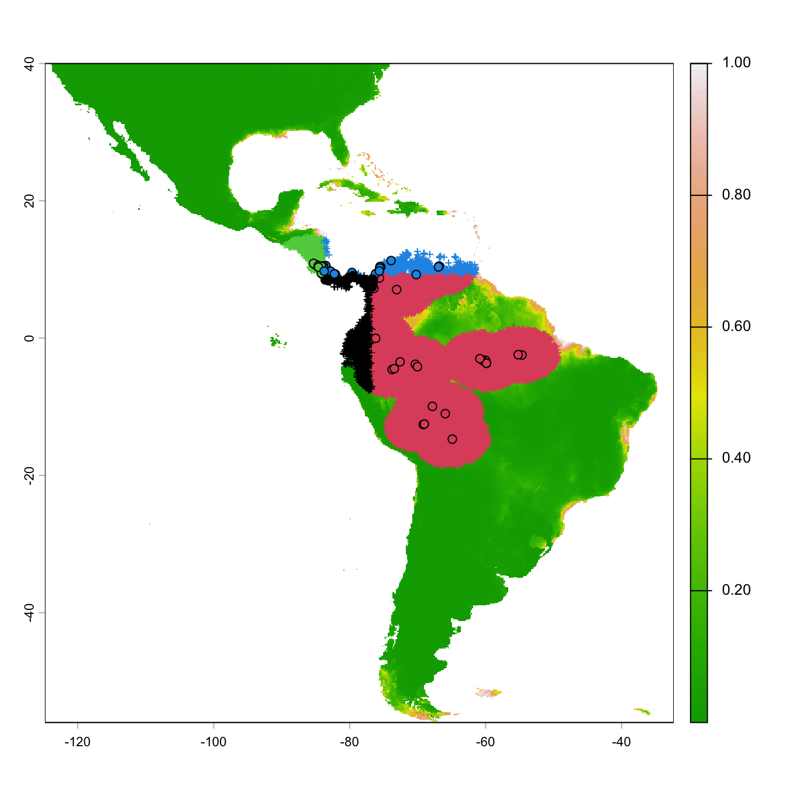
7.3 モデルの複雑さと予測の関係
モデルが複雑になるほど予測がどう変わるのかを見ましょう。 最も単純なモデル（線形のみ、RM が最大の 5; fc.L_rm.5）と、 最も複雑なモデル（線形・二次・ヒンジ、RM が最小の 1; fc.LQH_rm.1）を比べます。
mod.simple <- eval.models(e.mx)[["fc.L_rm.5"]]
mod.complex <- eval.models(e.mx)[["fc.LQH_rm.1"]]
# 単純なモデルは、係数が少ない
mod.simple$betas bio2 bio3 bio8 bio13 bio14
-0.7041289237 0.0244207208 0.0255996295 0.0028080670 -0.0175034897
bio15 bio18 bio19
-0.0294733275 0.0018004431 0.0008647022 length(mod.simple$betas)[1] 8# 複雑なモデルは、係数が多い
mod.complex$betas bio2
-2.854103e-01
bio3
-2.313998e-01
bio8
1.730133e-01
bio13
1.154111e-02
bio14
-4.262986e-03
bio18
2.438351e-03
bio19
4.005456e-03
I(bio9^2)
-1.135484e-03
I(bio15^2)
-3.120819e-05
I(bio18^2)
-4.739440e-07
I(bio19^2)
-1.297774e-06
hinge(bio2):5.15000009536743:6.8539082955341
2.344843e-01
hinge(bio2):5.15000009536743:8.84180119572854
-1.540577e-01
hinge(bio3):87.8816324350785:94.7731399536133
5.067789e+00
hinge(bio3):61.004753112793:76.8552204054229
8.608693e+00
hinge(bio5):28.4164270673479:36.4829978942871
-1.209000e+00
hinge(bio5):30.1449779588349:36.4829978942871
-2.456334e+00
hinge(bio5):31.8735288503219:36.4829978942871
-2.100161e+00
hinge(bio5):8.25:27.2640598063566
3.540729e-02
hinge(bio8):25.4444066796984:29.4280300140381
2.112312e+00
hinge(bio8):26.0134957274612:29.4280300140381
3.871455e+00
hinge(bio8):27.7207628707496:29.4280300140381
-2.327083e+00
hinge(bio9):27.5248498770655:29.5066661834717
-1.133497e+00
hinge(bio13):446.571428571429:808
-4.871652e+00
hinge(bio13):38:210.857142857143
2.809912e+00
hinge(bio13):38:305.142857142857
-5.763561e+00
hinge(bio14):0:9.73469387755102
1.782139e+00
hinge(bio14):0:38.9387755102041
-5.014040e-01
hinge(bio15):6.85179758071899:22.296948763789
9.697802e-01
hinge(bio15):6.85179758071899:31.5640394736309
2.361776e+00
hinge(bio15):6.85179758071899:50.0982208933149
-5.699956e-01
hinge(bio18):723:1709
-4.752456e+00
hinge(bio18):43:383
1.794569e+00
hinge(bio19):872.061224489796:2249
-1.641079e+00
hinge(bio19):0:183.591836734694
-1.309475e+00 length(mod.complex$betas)[1] 35# 応答曲線も比べる。複雑なモデルの曲線は、
# 二次項で曲がり、ヒンジ項で折れ曲がる。
evalplot.respCurves(mod.simple, resp.data)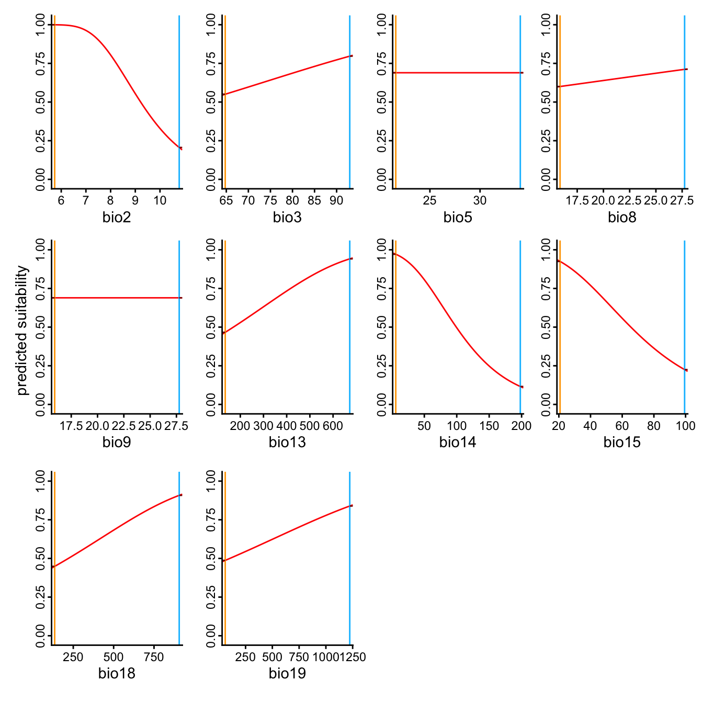
evalplot.respCurves(mod.complex, resp.data)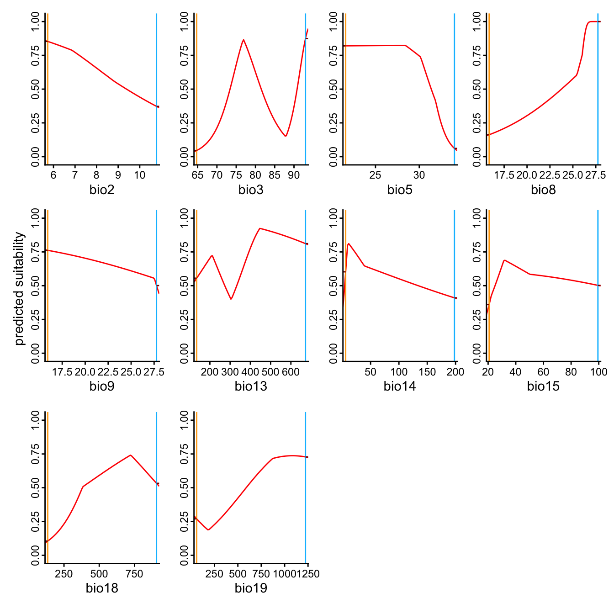
evalplot.respCurve(mod.complex, resp.data, var = "bio2")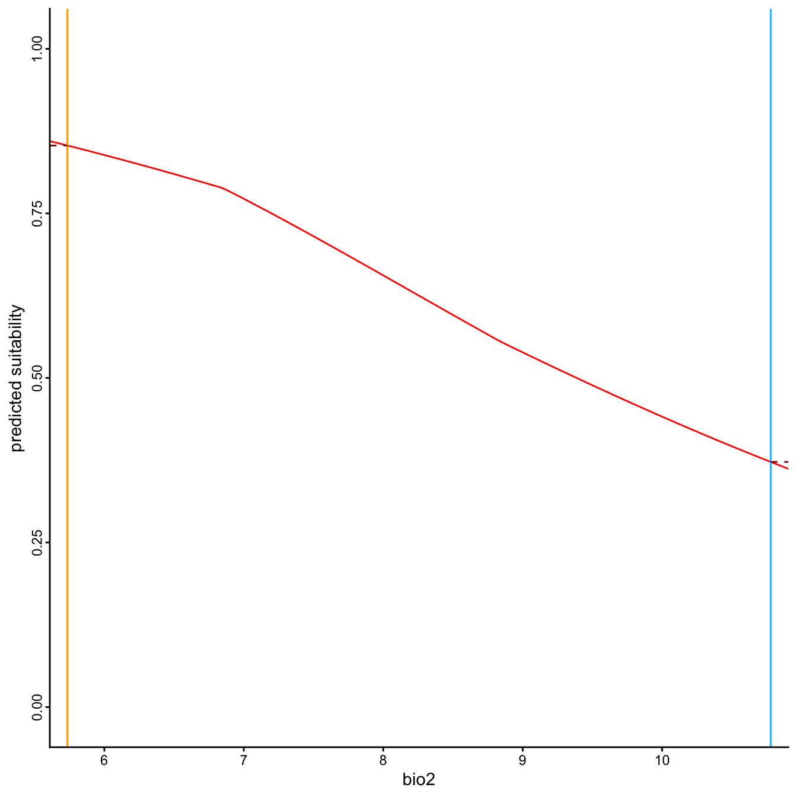
# 図を上下 2 段に分けて、予測地図を並べる
par(mfrow = c(2, 1), mar = c(2, 1, 2, 0))
# 最も単純なモデル:線形のみ、RM が大きい
plot(eval.predictions(e.mx)[["fc.L_rm.5"]], ylim = c(-30, 20), xlim = c(-90, -30),
main = "L_5 prediction", col = terrain.colors(100))
# 最も複雑なモデル:線形・二次・ヒンジ、RM が小さい
plot(eval.predictions(e.mx)[["fc.LQH_rm.1"]], ylim = c(-30, 20), xlim = c(-90, -30),
main = "LQH_1 prediction", col = terrain.colors(100))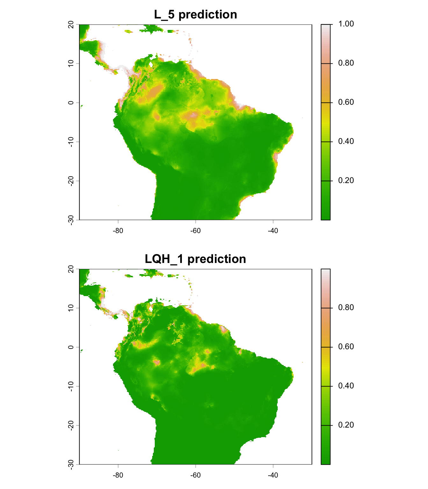
# 図の設定を元に戻す
par(mfrow = c(1, 1))単純なモデルは予測がなめらかで、複雑なモデルは斑状（patchy）になる傾向があります。 単純なモデルと複雑なモデルのどちらがよいかは、簡単には決まりません（Merow et al. 2014）。
8 発展:ヌルモデル
ここまでは、欠損率や AUC などの評価指標を計算しました。 しかし、これらの値が ランダムなデータで作ったモデル（ヌルモデル）と比べて十分によいのか はまだ分かりません。 ヌルモデルと比べると、指標の有意性と効果量が分かります（Raes & ter Steege 2007; Bohl et al. 2019; Kass et al. 2020）。
ENMnulls() は、ランダムな出現記録でヌルモデルを繰り返し作り、実際のモデルの指標と比べます。
警告注意:時間がかかる処理と、結果の保存・再利用
ヌルモデルは、1 回の反復が 1 つの ENMevaluate() に相当するため、時間がかかります。 元の vignette は反復 100 回（no.iter = 100）ですが、ここでは動作確認用に 10 回 にしています。 正式な解析では、100 回以上を推奨します。
また、時間のかかる計算の結果は saveRDS() で保存しておき、2 回目以降は readRDS() で読み込むのが定石です。 出現記録のダウンロードと同じ考え方です。
null.file <- "data/mod_null.rds"
if (!file.exists(null.file)) {
# 設定が fc = "LQH", rm = 3 のモデルについてのヌルモデルを作る
mod.null <- ENMnulls(e.mx, mod.settings = list(fc = "LQH", rm = 3), no.iter = 10)
saveRDS(mod.null, null.file)
}
mod.null <- readRDS(null.file)# 各反復の結果
null.results(mod.null) |> head() fc rm tune.args auc.train cbi.train auc.diff.avg auc.diff.sd auc.val.avg
1 LQH 3 fc.LQH_rm.3 0.7813301 0.920 0.17792313 0.17307468 0.5665811
2 LQH 3 fc.LQH_rm.3 0.7658413 0.966 0.16073512 0.10150316 0.6099707
3 LQH 3 fc.LQH_rm.3 0.7470709 0.894 0.06446899 0.06396335 0.7025611
4 LQH 3 fc.LQH_rm.3 0.7470367 0.929 0.09678357 0.06156796 0.6121073
5 LQH 3 fc.LQH_rm.3 0.7406704 0.954 0.22095017 0.30867085 0.4896232
6 LQH 3 fc.LQH_rm.3 0.7680750 0.918 0.14078534 0.10256796 0.5832072
auc.val.sd cbi.val.avg cbi.val.sd or.10p.avg or.10p.sd or.mtp.avg or.mtp.sd
1 0.2080751 0.26825 0.5785743 0.3337500 0.32252010 0.00000000 0.0000000
2 0.1593538 0.20100 0.5113818 0.2037500 0.16183196 0.03083333 0.0397562
3 0.1461668 0.48025 0.3857723 0.0300000 0.06000000 0.00000000 0.0000000
4 0.1732174 0.24425 0.6448382 0.1116667 0.04994441 0.00000000 0.0000000
5 0.3001093 0.14275 0.6935759 0.3625000 0.43186182 0.01000000 0.0200000
6 0.1664966 0.08775 0.5841651 0.0712500 0.08350399 0.00000000 0.0000000
ncoef
1 14
2 15
3 16
4 11
5 15
6 15# 各反復の fold ごとの結果
null.results.partitions(mod.null) |> head() iter tune.args fold auc.val auc.diff cbi.val or.mtp or.10p
1 1 fc.LQH_rm.3 1 0.7625283 0.03576879 0.747 0.00000000 0.16000000
2 1 fc.LQH_rm.3 2 0.4245251 0.20244380 -0.054 0.00000000 0.29166667
3 1 fc.LQH_rm.3 3 0.3527419 0.41300196 -0.384 0.00000000 0.80000000
4 1 fc.LQH_rm.3 4 0.7265291 0.06047797 0.764 0.00000000 0.08333333
5 2 fc.LQH_rm.3 1 0.6441845 0.12417754 0.542 0.04000000 0.28000000
6 2 fc.LQH_rm.3 2 0.4356769 0.27765743 -0.515 0.08333333 0.37500000# 実際のモデルとヌルモデルの比較の要約
null.emp.results(mod.null) statistic auc.train cbi.train auc.val auc.diff cbi.val
1 emp.mean 8.716551e-01 0.83600000 0.7638955808 0.14063020 0.5592500000
2 emp.sd NA NA 0.1380983244 0.03416283 0.2142138729
3 null.mean 7.532352e-01 0.93140000 0.5826347154 0.15005885 0.2061000000
4 null.sd 1.938352e-02 0.02852757 0.0495770994 0.08039035 0.0961397184
5 zscore 6.109310e+00 -3.34413347 3.6561409938 -0.11728583 3.6732997119
6 pvalue 5.003153e-10 0.99958730 0.0001280203 0.45331678 0.0001197192
or.mtp or.10p
1 0.04083333 0.1758333
2 0.03267404 0.1578589
3 0.02116667 0.1978333
4 0.08533241 0.1381949
5 0.23047125 -0.1591954
6 0.59113720 0.4367575結果をヒストグラムで描きます。実際のモデルの値（赤い実線）が、ヌルモデルの値の 99 パーセンタイル（紫の破線）より高ければ、 そのモデルの成績は、ランダムより有意によい、と言えます。
evalplot.nulls(mod.null, stats = c("or.10p", "cbi.val"), plot.type = "histogram")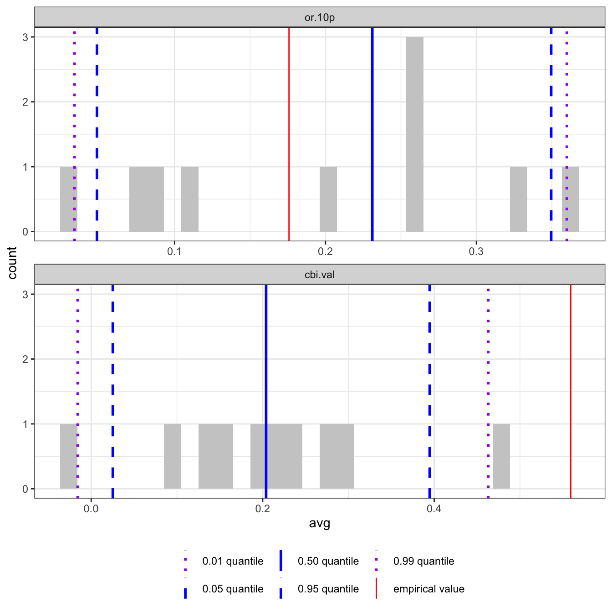
# バイオリン図で描くこともできる（赤い点が実際のモデル）
evalplot.nulls(mod.null, stats = c("or.10p", "cbi.val"), plot.type = "violin")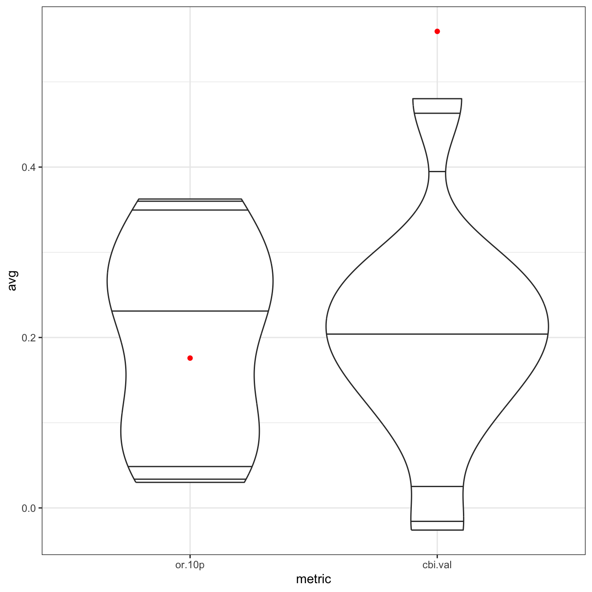
9 省略した内容
元の vignette にあって、このチュートリアルでは省略した内容は次のとおりです。
maxent.jar（Java 版 Maxent）:Java の設定が必要で、うまく動かないことも多いため省略しました。algorithm = "maxent.jar"で使えます。- 独自の評価指標（
user.eval、kuenmによる pROC）や、独自のアルゴリズム（ENMdetails）。 - 完全に独立したテストデータ（
partitions = "testing"）、分割なし（"none"）、環境ラスターなしの入力（SWD）。 - メタデータの出力（
rangeModelMetadata）:モデルの報告には、標準的な枠組みである ODMAP（Zurell et al. 2020）も利用できます。
ノート次のステップ:targets でパイプラインにする
ここまでは、コードを 1 つずつ実行して、結果を確かめてきました。 同じ解析を、設定を変えながらくり返したり、複数の種に当てはめたりするときは、 R パッケージ targets で パイプライン にしておくと便利です。 結果を得るのに必要な部分だけを書き直した targets 版チュートリアル に進んでください。
10 参考文献と情報源
10.0.0.1 ウェブの情報源
10.0.0.2 論文
- Aiello-Lammens, M. E. et al. (2015) spThin: an R package for spatial thinning of species occurrence records for use in ecological niche models. Ecography 38: 541–545.
- Bohl, C. L., Kass, J. M. & Anderson, R. P. (2019) A new null model approach to quantify performance and significance for ecological niche models of species distributions. Journal of Biogeography 46: 1101–1111.
- Elith, J. et al. (2010) The art of modelling range-shifting species. Methods in Ecology and Evolution 1: 330–342.
- Elith, J. et al. (2011) A statistical explanation of MaxEnt for ecologists. Diversity and Distributions 17: 43–57.
- Hirzel, A. H. et al. (2006) Evaluating the ability of habitat suitability models to predict species presences. Ecological Modelling 199: 142–152.
- Kass, J. M. et al. (2020) Biotic predictors with phenological information improve range estimates for migrating monarch butterflies in Mexico. Ecography 43: 341–352.
- Kass, J. M. et al. (2021) ENMeval 2.0: Redesigned for customizable and reproducible modeling of species’ niches and distributions. Methods in Ecology and Evolution 12: 1602–1608.
- Kass, J. M. et al. (2022) The global distribution of known and undiscovered ant biodiversity. Science Advances 8: eabp9908.
- Lobo, J. M., Jiménez-Valverde, A. & Real, R. (2008) AUC: a misleading measure of the performance of predictive distribution models. Global Ecology and Biogeography 17: 145–151.
- Merow, C., Smith, M. J. & Silander, J. A. (2013) A practical guide to MaxEnt for modeling species’ distributions: what it does, and why inputs and settings matter. Ecography 36: 1058–1069.
- Merow, C. et al. (2014) What do we gain from simplicity versus complexity in species distribution models? Ecography 37: 1267–1281.
- Pearson, R. G. et al. (2007) Predicting species distributions from small numbers of occurrence records: a test case using cryptic geckos in Madagascar. Journal of Biogeography 34: 102–117.
- Phillips, S. J. et al. (2006) Maximum entropy modeling of species geographic distributions. Ecological Modelling 190: 231–259.
- Phillips, S. J. et al. (2009) Sample selection bias and presence-only distribution models: implications for background and pseudo-absence data. Ecological Applications 19: 181–197.
- Phillips, S. J. et al. (2017) Opening the black box: an open-source release of Maxent. Ecography 40: 887–893.
- Radosavljevic, A. & Anderson, R. P. (2014) Making better Maxent models of species distributions: complexity, overfitting and evaluation. Journal of Biogeography 41: 629–643.
- Raes, N. & ter Steege, H. (2007) A null-model for significance testing of presence-only species distribution models. Ecography 30: 727–736.
- Roberts, D. R. et al. (2017) Cross-validation strategies for data with temporal, spatial, hierarchical, or phylogenetic structure. Ecography 40: 913–929.
- Shcheglovitova, M. & Anderson, R. P. (2013) Estimating optimal complexity for ecological niche models: a jackknife approach for species with small sample sizes. Ecological Modelling 269: 9–17.
- Valavi, R. et al. (2019) blockCV: An R package for generating spatially or environmentally separated folds for k-fold cross-validation of species distribution models. Methods in Ecology and Evolution 10: 225–232.
- VanDerWal, J. et al. (2009) Selecting pseudo-absence data for presence-only distribution modeling: how far should you stray from what you know? Ecological Modelling 220: 589–594.
- Veloz, S. D. (2009) Spatially autocorrelated sampling falsely inflates measures of accuracy for presence-only niche models. Journal of Biogeography 36: 2290–2299.
- Warren, D. L. & Seifert, S. N. (2011) Ecological niche modeling in Maxent: the importance of model complexity and the performance of model selection criteria. Ecological Applications 21: 335–342.
- Zurell, D. et al. (2020) A standard protocol for reporting species distribution models. Ecography 43: 1261–1277.